Inhaltsverzeichnis
- Was ist Stammbaum?
- Die ersten Schritte
- Die Oberfläche verstehen
- Personen — das Herzstück
- Familien
- Quellen und Archive
- Erfassung: ein Registereintrag in einem Zug
- Orte
- Höfe
- Medien
- Diagramme: Baum, Karte, Zeitleiste
- Statistik
- Story: Erzählte Biografien
- Ausgaben: Druckfertige Reports
- Forschung: Aufgaben, Protokoll, Hypothesen
- Qualität und Datenprüfung
- Suchen und Finden
- Speichern und Sichern
- Datenformate und Import/Export
- Was noch folgt
- Gute Praxis auf einen Blick
- Häufige Fragen
- Umstieg von anderen Programmen
- Checkliste für einen guten Start
- Anhang A: Symbole und Tastaturkürzel
- Anhang B: Das GEDCOM-Dateiformat
- Anhang C: Das GRAMPS-Dateiformat
- Anhang D: Technischer Überblick
- Anhang E: Der Orte-Editor
Alle Abbildungen in diesem Handbuch stammen aus der laufenden App mit einem Beispiel-Stammbaum (rund 2.800 Personen).
1. Was ist Stammbaum?
Stammbaum ist ein Programm zum Erfassen, Ordnen und Auswerten von Familiengeschichte. Es läuft als Web-App (PWA) direkt im Browser Ihres iPhones, iPads oder Computers — und lässt sich wie eine echte App zum Startbildschirm hinzufügen.
Was die App auszeichnet
- Kein Server, kein Konto. Ihre Daten bleiben auf Ihrem Gerät. Es gibt keine Anmeldung und keine Cloud, in die etwas hochgeladen wird.
- Offline nutzbar. Einmal geladen, funktioniert die App auch ohne Internet. Eine Anzeige in der Schale signalisiert, wenn Sie offline sind.
- Ihre Datei kommt heil wieder heraus. Das ist der Grund, warum es diese App gibt. Öffnen und Speichern gibt Ihnen dieselbe Datei zurück — alles, was Ihr voriges Programm hineingeschrieben hat, auch was Stammbaum selbst gar nicht anzeigen kann, steht unverändert wieder drin. Nachgewiesen wird das nicht behauptet, sondern gemessen: Jede Änderung am Programm muss einen automatischen Test bestehen, der eine echte Datei liest, schreibt, wieder liest und auf null Abweichung prüft. Und zwar an einem echten Bestand: Ein Öffnen-und-Speichern ohne jede Änderung lässt an einer Datei mit gut 3.000 Personen inzwischen keine einzige Zeile zurück und schreibt keinen einzigen Wert um — auch nicht die 668 Ortstexte und 200 Namensteile, die eine frühere Fassung noch stillschweigend „aufgeräumt" hat. Wer schon einmal beim Programmwechsel Notizen, Patenschaften oder Quellenangaben verloren hat, weiß, warum das keine Selbstverständlichkeit ist (Einzelheiten: Anhang B).
- Zwei Standardformate, gleichrangig. GEDCOM 5.5.1 und GRAMPS XML — beide werden gelesen und geschrieben, Sie können zwischen ihnen wechseln, ohne etwas zu verlieren (siehe Kapitel 19).
- Sechs Kern-Datenarten: Personen, Familien, Quellen, Orte, Höfe und Medien — dazu Diagramme, Statistik und ein Forschungs-Arbeitsbereich.
- Ihre Bilder bleiben Ihre Dateien. Stammbaum legt keine eigene Fotosammlung an und lädt nichts hoch: Sie geben einmal den Ordner frei, in dem Ihre Scans ohnehin liegen, und die App zeigt sie als Vorschau — in der Galerie, im Steckbrief, in Story und Ausgaben (siehe Kapitel 10).
- Ein Registereintrag, ein Speichervorgang. Ein Trauregister nennt zwei Brautleute, zwei Elternpaare, Datum, Ort und seine eigene Seitenzahl. Die Erfassung nimmt das in einer Fläche auf und legt Personen, Familien und Ereignisse zusammen an — mit der Quellenangabe an jedem einzelnen davon und einem einzigen Schritt zum Zurücknehmen. Die Vorlagen dafür sind nicht vorgegeben, sondern frei baubar: eine je Kirchenbuch, so geordnet, wie der Eintrag gelesen wird.
- Erzählte Biografien. Die Story-Ansicht macht aus nüchternen Daten eine lesbare Lebensgeschichte — mit Karte, Diagramm und Fotos, als Dokument herunterladbar.
- Druckfertige Ausgaben. Vom Familienbuch über Ahnenliste und Ortssippenbuch bis zur Hofchronik — buchreife Dokumente direkt aus Ihren Daten, ganz ohne fremde Software.
- Historische Ortstiefe. Orte tragen ihre Verwaltungszugehörigkeit Epoche für Epoche — eine Zeitachse, die keine GEDCOM-Datei speichern kann.
- Forschen mit Beleg. Aufgaben, Protokoll, Hypothesen und ein Qualitäts-Dashboard führen von der offenen Frage zur belegten Aussage.
- Für den Daumen gebaut, für die Tastatur auch. Kein am Schreibtisch entstandenes Programm, das man aufs Handy geschoben hat: Jede Schaltfläche ist mindestens fingerbreit (44 Pixel Trefferfläche — auch dort, wo das Zeichen kleiner gezeichnet ist), am Computer speichert die Eingabetaste jedes Formular und Esc verwirft es, und in einem offenen Dialog bleibt der Tastaturfokus, wo er hingehört. Ein automatischer Wächter prüft das bei jeder Programmänderung nach (siehe Kapitel 3).
Was Sie zum Loslegen brauchen
Einen aktuellen Browser (Safari, Chrome oder Edge) und optional eine eigene GEDCOM- oder GRAMPS-Datei. Zum Ausprobieren genügt der eingebaute Demo-Stammbaum.
2. Die ersten Schritte
Demo-Stammbaum laden
Beim ersten Start ist die App leer. Der schnellste Weg hineinzuschnuppern:
- Unten rechts auf Mehr tippen.
- Datei wählen.
- Demo laden antippen.
Der Demo-Stammbaum durchläuft dieselbe Lade-Verarbeitung wie eine echte Datei — Sie sehen also genau, wie sich Ihre eigenen Daten verhalten werden.
Eigene Datei öffnen
Über Mehr → Datei → Datei öffnen (GEDCOM/GRAMPS) wählen Sie eine Datei von Ihrem Gerät. GEDCOM wird als Text, GRAMPS (gepacktes XML) automatisch entpackt eingelesen.
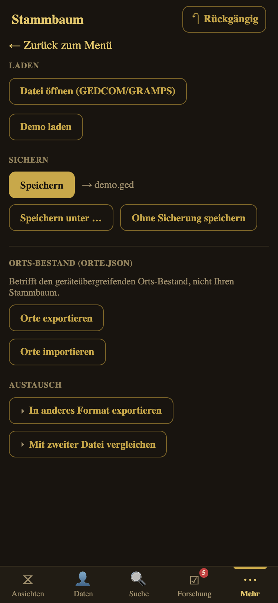
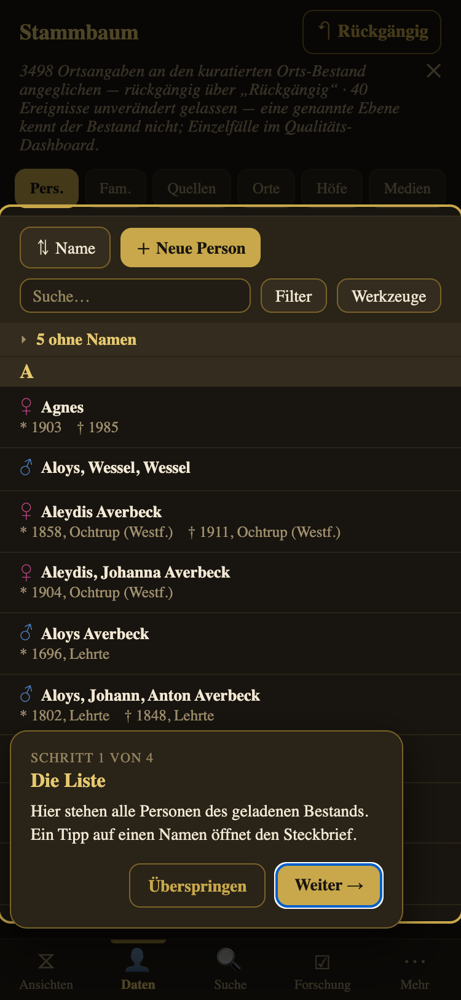
Der Rundgang beim ersten Mal
Ist der Demo-Stammbaum geladen, legt sich auf dem Handy einmalig ein Rundgang in vier Schritten über die Oberfläche. Er hebt nacheinander die Stelle hervor, um die es gerade geht — die Liste, die Segmentreihe, die Ansichten und den Weg zu den eigenen Daten — und benennt sie so, wie sie in der App gerade heißen. Sie können ihn durchklicken oder jederzeit abbrechen; danach kommt er nicht wieder.
Auf dem Computer entfällt er bewusst: Dort beschriftet die Seitenleiste dieselben Ziele ohnehin dauerhaft — ein Rundgang würde nur erklären, was schon dasteht.
Der übliche Weg — von der Datei zur belegten Forschung
Wenn Sie mit einer bestehenden Datei arbeiten, hat sich diese Reihenfolge bewährt. Die einzelnen Schritte sind in den folgenden Kapiteln ausführlich erklärt.
- Öffnen & sichten. Datei laden und mit dem Qualitäts-Dashboard einen ersten Eindruck der Datenlage gewinnen.
- Orte ordnen. Den Orts-Bestand importieren, Dubletten zusammenführen, Text-Orte mit Ortsobjekten verknüpfen — danach greifen Karte, Statistik und Ortszeitgenossen.
- Ergänzen & belegen. Fehlende Ereignisse eintragen und jede Angabe mit einer Quelle versehen.
- Serien erfassen. Arbeiten Sie ein Kirchenbuch oder Register am Stück durch, legen Sie sich dafür eine Erfassungs-Vorlage an — ein Eintrag wird dann zu einer Eingabe samt Quellenangabe.
- Forschen mit Plan. Offene Fragen als Aufgabe festhalten, Recherche im Protokoll dokumentieren, Schlussfolgerungen als Hypothese prüfen.
- Prüfen & sichern. Befunde abarbeiten und die Datei bewusst zurückschreiben.
3. Die Oberfläche verstehen
Stammbaum ordnet alles nach Rollen: Es gibt Daten (die sechs Datenarten), Ansichten (Diagramme und Statistik), Forschung (Dashboard, Aufgaben, Protokoll, Hypothesen) und Arbeit (Suche, Datei, Ausgaben, Erfassung, Einstellungen). Auf dem Handy und auf dem Computer sieht das leicht unterschiedlich aus, folgt aber überall demselben Register — und benennt dieselbe Gruppe auf beiden Geräten gleich.
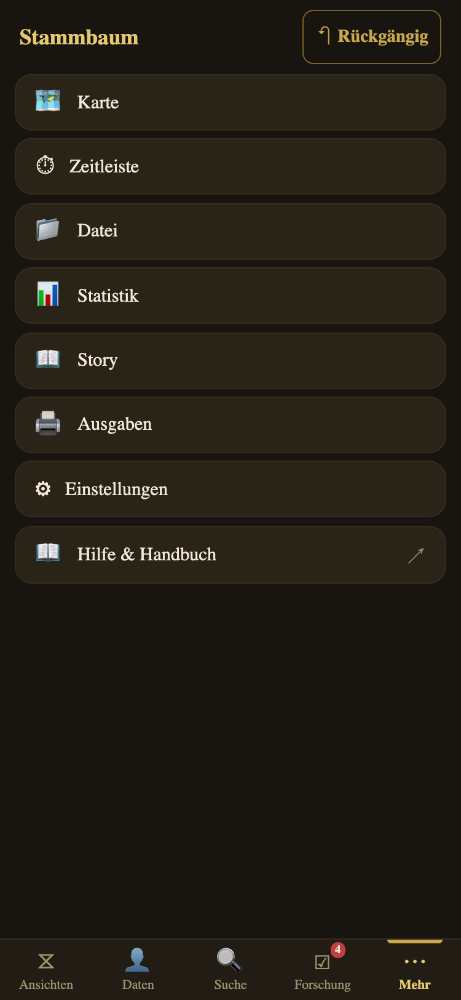
Auf dem Handy: Bottom-Navigation
Unten liegen fünf Tasten: Ansichten, Daten, Suche, Forschung und Mehr. Die Reihe direkt darunter wechselt je nach Bereich — unter Daten sind das die Segmente Personen · Familien · Quellen · Orte · Höfe · Medien.
Unter Mehr finden Sie Karte, Zeitleiste, das Datei-Menü, die Erfassung, Statistik, Story, Ausgaben und die Einstellungen.
Zurück und vorwärts. Stammbaum merkt sich Ihren Weg. In einer Detailansicht führt „← Zurück" dorthin, wo Sie hergekommen sind — also zur zuvor angesehenen Person, zum Ort oder zur Karte, nicht stur zur Liste. Dasselbe erreichen Sie mit einem Wischen nach rechts; ein Wischen nach links geht wieder vorwärts. Am Computer tun das Alt + ← und Alt + →. In einem offenen Formular oder Dialog ist das Wischen abgeschaltet — eine halb ausgefüllte Eingabe soll nicht durch eine Handbewegung verschwinden.
Zurück zur Liste — in einem Schritt. „← Zurück" folgt Ihrem Weg, und nach einer längeren Wanderung (Person → Ort → Nachbar → Quelle) ist das nicht immer das, was man will. Ein Tipp auf das bereits aktive Segment — also auf Personen, während eine Person offen ist — legt die Auswahl ab und zeigt wieder die Liste. Kein zusätzlicher Knopf, dieselbe Geste wie auf dem Startbildschirm des Telefons. Ein anderes Segment räumt bewusst nichts weg: Dessen eigene Auswahl wartet dort, wo Sie sie verlassen haben.
Bedienbarkeit: Fingerbreite und Tastatur
Zwei Zusagen, die man erst bemerkt, wenn sie fehlen — und die deshalb nicht dem Augenmaß überlassen, sondern gemessen werden:
- Jede Schaltfläche ist mindestens 44 Pixel hoch und breit. Das gilt auch dort, wo das Zeichen kleiner aussieht: Die Segmentreihen, das ✎ an einer Ereigniszeile oder das ✕ an einer Marke bleiben optisch schlank, tragen aber eine unsichtbare Trefferzone in voller Größe. So bleiben die Reihen luftig, ohne dass Sie zielen müssen.
- Tastatur-first, überall. In jeder Eingabefläche — vom Personen-Steckbrief über Quelle, Archiv, Ort, Hof und Medium bis zu Aufgabe, Protokoll und Hypothese — speichert die Eingabetaste, und Esc tut genau das, was der zweite Knopf der Fläche tut: auf einer Detailseite die Feldwerte verwerfen, in einem eingeblendeten Entwurf ihn schließen. Liegen zwei Formulare ineinander (etwa ein „neu anlegen" mitten in einem Auswahlfeld), gilt die Taste dem inneren zuerst.
- Im Dialog bleibt der Fokus im Dialog. Öffnet sich ein Modal (Ereignis bearbeiten, Orts-Zugehörigkeit, Personen-Zusammenführung, Prüfregeln), springt der Tastaturfokus hinein, wandert mit Tab nur darin im Kreis und kehrt beim Schließen zum auslösenden Knopf zurück. Ein Ausgang gibt es immer: Esc.
Rückfragen und Rückmeldungen
Vor jedem Löschen fragt die App — und zwar die App. Die Rückfrage ist ein Dialog des Programms, kein Browser-Fenster: Sie nennt in der Überschrift die Handlung („Taufe" löschen?), darunter, was verloren geht, und der bestätigende Knopf trägt ein Verb statt „OK" — Löschen, Entfernen, Ersetzen. Esc oder ein Klick daneben bricht ab, der Tastaturfokus bleibt im Dialog. Überall dieselbe Form, an jeder der sieben Datenarten.
Und jede Rückmeldung sieht gleich aus. Ob nach dem Laden einer Datei, nach einem Export oder nach einer Erfassung: Bestätigungen und Hinweise erscheinen als eine Zeile mit ✕ zum Schließen, die sich nach einer Weile von selbst zurückzieht. Sie betrifft nur die Anzeige — was tatsächlich Handlungsbedarf ist, steht als Befund im Qualitäts-Dashboard und verschwindet dort nicht von allein.
Auf dem Computer: Seitenleiste und zwei Spalten
Ab einer Fensterbreite von etwa 900 Pixeln ersetzt eine Seitenleiste die untere Navigationsleiste. Sie zeigt alle Ziele nach Rolle gruppiert (DATEN · ANSICHTEN · FORSCHUNG · ARBEIT — die Gruppe Forschung bündelt Dashboard, Aufgaben, Protokoll und Hypothesen, die Gruppe Arbeit Suche, Datei, Ausgaben, Erfassung und Einstellungen). Zusätzlich erscheint die Zwei-Spalten-Ansicht: links die Liste, rechts sofort die Detailansicht des gewählten Eintrags.
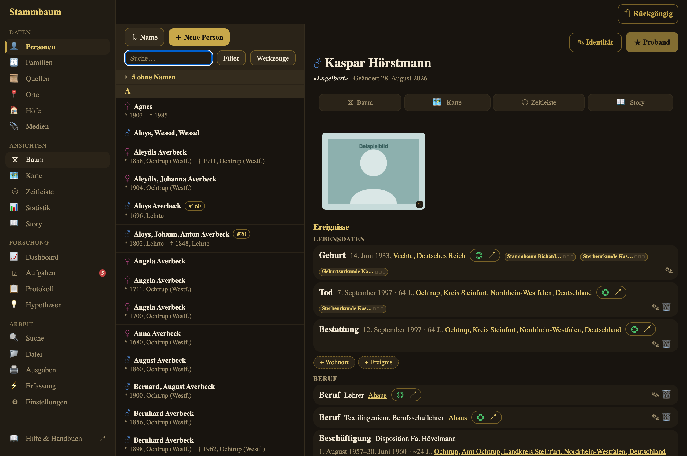
Befehlspalette (⌘K)
Auf dem Computer öffnet ⌘K (bzw. Strg+K) eine
Befehlspalette: Tippen Sie ein Ziel wie „Karte" oder einen Namen, und springen
Sie mit der Eingabetaste direkt dorthin.
Rückgängig und Wiederholen
Oben in der Kopfzeile liegen die Pfeile ↶ Rückgängig und ↷ Wiederholen. Jede Änderung lässt sich schrittweise zurücknehmen; Zum geladenen Stand verwirft alle Änderungen seit dem letzten Laden.
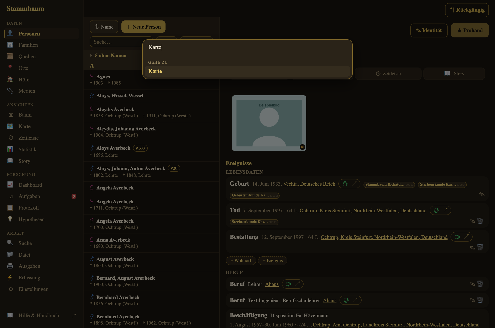
4. Personen — das Herzstück
Die Personenliste
Alle Personen alphabetisch, gruppiert nach Anfangsbuchstabe. Jede Zeile zeigt Namen sowie Geburts- und Sterbedaten (mit Ort, sofern vorhanden). Personen ohne verwertbaren Namen (leer oder nur „?") stehen ganz oben zu einer aufklappbaren Zeile „N ohne Namen" zusammengefasst — so öffnet die Liste nicht mit lauter Unbekannten; ein Tippen zeigt sie einzeln (bei aktiver Suche sind sie automatisch aufgeklappt).
- ↕ Name schaltet die Sortierung um.
- Das Suchfeld filtert sofort nach Namen.
- + Neue Person legt einen neuen Datensatz an.
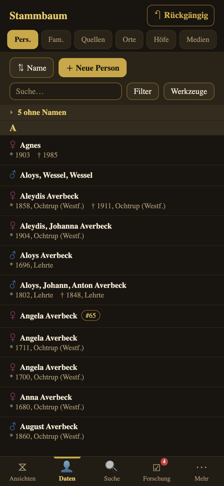
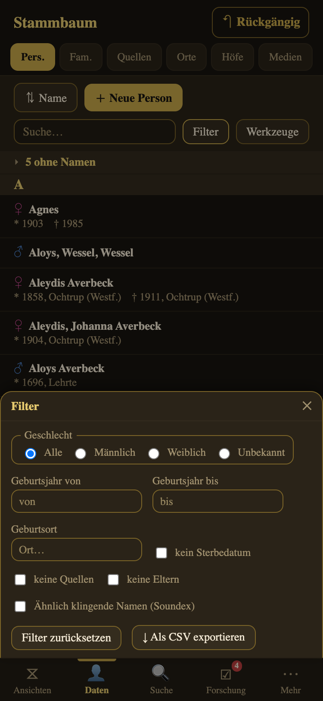
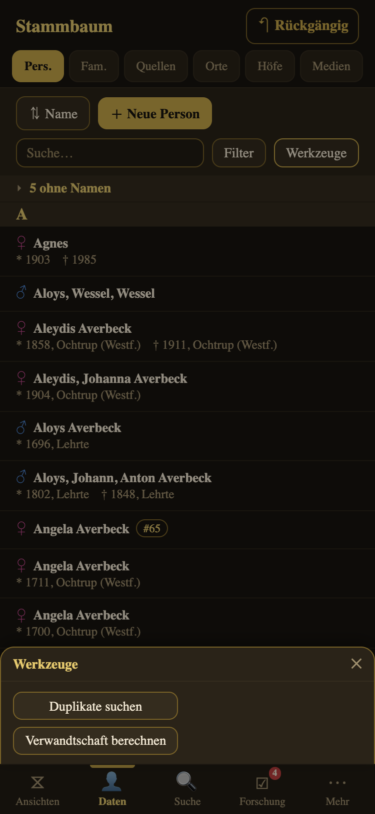
Filtern und Werkzeuge
Filter öffnet ein Panel: nach Geschlecht, Geburtsjahr von–bis, Geburtsort sowie nach fehlenden Angaben (kein Sterbedatum, keine Quellen, keine Eltern). „Filter zurücksetzen" räumt alles wieder auf.
Werkzeuge öffnet die Zusatzfunktionen — darunter Duplikate suchen (siehe unten).
Die Detailansicht einer Person
Ereignisse sind nach Typ gruppiert — Lebensdaten, Beruf, Wohnen & Eigentum und so weiter. Zu jedem Ereignis sehen Sie:
- Datum und Ort (der Ort ist anklickbar und führt zur Karte oder zum Ort-Steckbrief),
- einen ◎-Kreis, wenn Koordinaten vorliegen, und einen Pfeil ↗ zum Sprung auf die Karte,
- Quellen-Marken zeigen den Kurznamen der Quelle — ein Tippen öffnet die Quelle; ein kleiner Punkte-Balken daneben ist die Beweiskraft (0–3 gefüllte Punkte). Nur eine namenlose Quelle erscheint ersatzweise als Nummer §N.
Oben führt ✎ Identität in die Bearbeitung der Stammdaten (Name, Geschlecht, Rufname, Titel …) — der Knopf heißt bewusst nicht „Bearbeiten", denn die Ereignisse pflegen Sie ohne ihn, direkt an ihrer Zeile. Darunter liegt eine Reihe, die dieselbe Person in einer anderen Ansicht öffnet: ⧖ Baum, 🗺 Karte, ⏱ Zeitleiste, 📖 Story. + Wohnort und + Ereignis ergänzen neue Einträge.
Die Geburtszeile steht immer. Auch wenn zu einer Person weder Datum noch Ort der Geburt bekannt sind, führt der Steckbrief die Zeile — leer, aber vorhanden. Sonst wäre die häufigste Angabe der Genealogie ausgerechnet dort nicht einzutragen, wo sie fehlt. Dasselbe gilt für Taufe, Tod und Bestattung.
Ist ein Medium als Primärbild gekennzeichnet und der Medien-Ordner verbunden, steht es als Porträt im Steckbrief; Ereignisse mit eigenem Medium tragen eine kleine Miniatur in ihrer Zeile. Beides ist reine Anzeige — verwaltet werden die Dateien im Segment Medien.
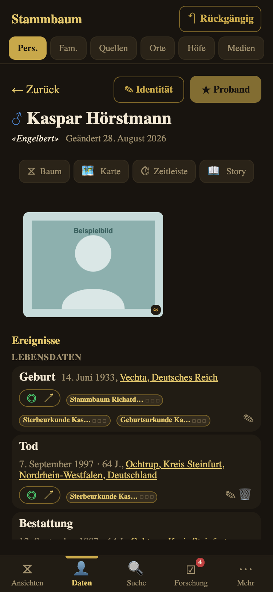
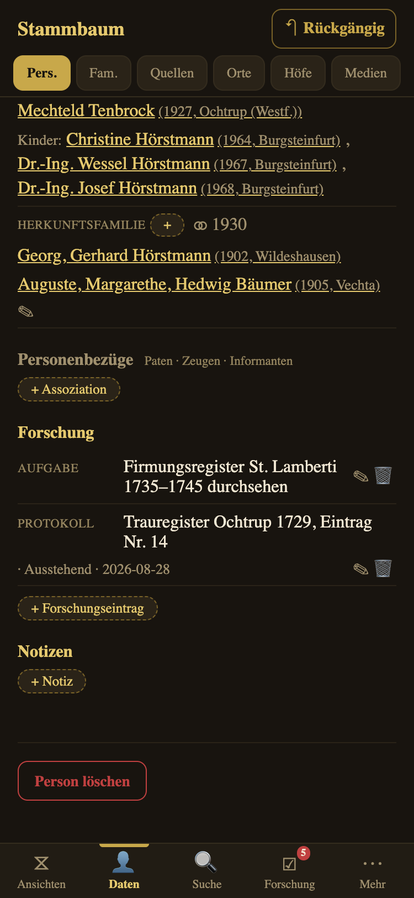
Eltern und eigene Familien direkt am Steckbrief. Unter Herkunftsfamilie und Eigene Familie steht hinter jeder Rolle (Vater, Mutter, Partner) eine +-Pille. Ein Tipp öffnet die Suche: Sie ordnen eine vorhandene Person zu — oder legen sie gleich neu an, wenn die Suche nichts findet. Ist noch gar keine Familie da, entsteht sie dabei mit. Sie müssen für einen fehlenden Vater also nicht mehr erst in den Familien-Bereich wechseln.
Jede Familienzeile nennt ihr Hochzeitsdatum (⚭), gleich zu Beginn der Zeile: bei der eigenen Familie die eigene Ehe, bei der Herkunftsfamilie die der Eltern — für die Einordnung einer Kindheit oft genauso wichtig. Ist keines bekannt, steht dort nichts (kein „unbekannt"). Die Kinder stehen chronologisch nach Geburtsdatum, Kinder ohne Datum am Ende. Sortiert wird nur die Anzeige: In Ihrer Datei bleibt die Reihenfolge unangetastet, so wie sie dort steht.
Forschung an Ort und Stelle. Ein eigener Abschnitt Forschung nimmt Aufgaben, Hypothesen und Protokoll-Einträge direkt an der Person auf — dieselben Einträge, die Kapitel 15 beschreibt, nur ohne Umweg über den Forschungs-Bereich. ＋ Forschungseintrag öffnet dafür ein Menü mit den drei Arten.
Jede Zeile sagt, was sie weiß: links ihre Art (Aufgabe · Protokoll · Hypothese), dann der Text und dahinter als Zusatz, was den Eintrag unterscheidet — das Ergebnis einer Suche, der Status einer Hypothese, die Quelle, das Datum, jeweils in Klartext statt als Kürzel. ✎ und 🗑 an der Zeile ändern und entfernen ihn, genau wie an einer Ereigniszeile darüber. Ab vier Einträgen klappt der Abschnitt zusammen, damit er den Steckbrief nicht überwächst.
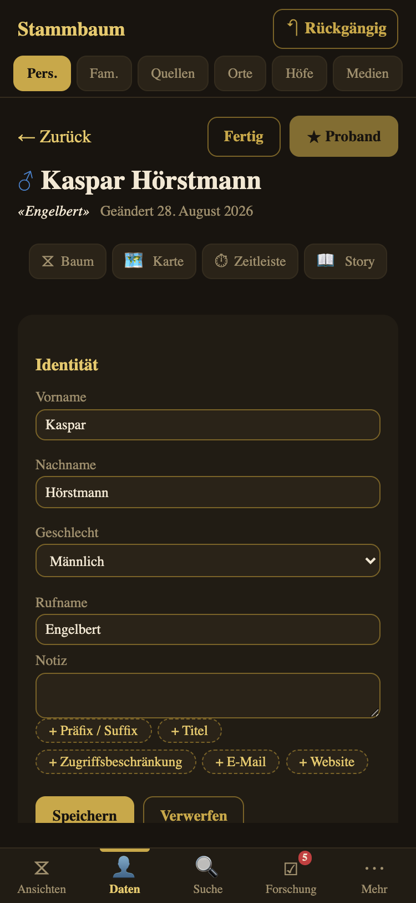
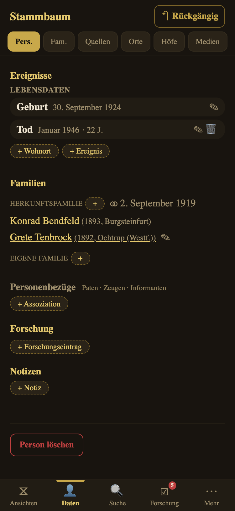
Ein Bearbeiten-Paradigma für die ganze App
Der Bearbeiten-Modus ersetzt die Seite nicht: Kopfzeile, Name und Rückweg bleiben stehen, das Formular klappt darunter auf, und Fertig schließt es wieder. So wissen Sie jederzeit, wen Sie gerade bearbeiten — und der Weg zurück verschwindet nicht unter dem Formular.
Dasselbe Muster gilt in allen Datenarten, und mit ihm drei Zusagen: Die Knöpfe Bearbeiten, Speichern und Verwerfen sehen überall gleich aus und sind überall fingerbreit; die Eingabetaste speichert, Esc verwirft; und Löschen steht nie in dieser Reihe, sondern abgesetzt am Fuß der Seite, hinter einer Trennlinie und einer Rückfrage.
Beweisführungsnotiz
Trägt eine Person mindestens eine Hypothese, erscheint im Detail eine automatisch berechnete, rein lesende Beweisführungsnotiz: ein Reifegrad („% aufgelöst"), die Quellenlage (Anteil mit Evidenz-Bewertung und Beweiskraft) sowie die Zahl bestätigter, offener und verworfener Hypothesen. Sie fasst auf einen Blick zusammen, wie gut die Person belegt ist — ohne dass Sie etwas eingeben müssen.
Was die Liste schon verrät
Jede Zeile der Personenliste trägt drei stille Hinweise: das
Geschlechts-Zeichen (♂/♀/◇), die Lebensdaten mit Geburtsort — und, sobald
ein Proband gesetzt ist, dessen Kekulé-Nummer
#N bei allen Vorfahren. So sehen Sie beim Blättern, wer in der
direkten Ahnenlinie steht, ohne den Baum zu öffnen. Alphabetische Trenner gliedern die
Liste nach Anfangsbuchstaben.
Personenbezüge: Paten, Zeugen, Informanten
Nicht jede Verbindung zwischen zwei Menschen ist eine Verwandtschaft. Unter Personenbezüge hält der Steckbrief fest, wer bei einer Taufe Pate war, wer als Zeuge unterschrieb oder wer eine Angabe berichtet hat — mit Rolle (Vorschläge von Taufpate bis Informant, freier Text erlaubt), Notiz und eigenen Quellenbelegen.
Der Proband — die Referenzperson der Sitzung
Viele Ansichten drehen sich um eine Person: der Baum stellt sie in die Mitte, die Story erzählt ihr Leben, die Ausgaben nehmen sie als Bezugsperson. Diese Person heißt Proband. Im Kopf jeder Personen-Detailansicht setzen Sie sie mit ☆ Als Proband; der Knopf zeigt danach ★ Proband.
Der Proband gilt für die ganze Sitzung und wird nicht in die Datei geschrieben. Solange Sie keinen gesetzt haben, wählt die App sinnvoll vor — so ist überall dieselbe Person gemeint, ohne dass Sie sie in jeder Ansicht neu suchen müssen.
Haben Sie einen Probanden gesetzt, sagt Ihnen jeder Steckbrief, wie seine Person zu ihm steht. Unter dem Namen steht das Verwandtschaftsverhältnis, der Grad hervorgehoben: Onkel von Kaspar Hörstmann. Gibt es keinen gemeinsamen Vorfahren, steht genau das dort — „nicht mit … verwandt" ist eine Auskunft, kein Fehler, und unterscheidet sich sichtbar von „nicht berechnet". Beim Probanden selbst entfällt die Zeile; dort sagt es bereits ★ Proband. Und solange Sie keinen gewählt haben, bleibt sie ebenfalls weg: Die App richtet ihre Ansichten zwar auch ohne Ihre Wahl auf eine Person aus, aber einen Satz über eine Person, die Sie nie benannt haben, stellt sie nicht auf. Gerechnet wird mit demselben Verfahren wie im Verwandtschaftsrechner — wer den vollständigen Pfad und den gemeinsamen Vorfahren sehen will, öffnet ihn dort.
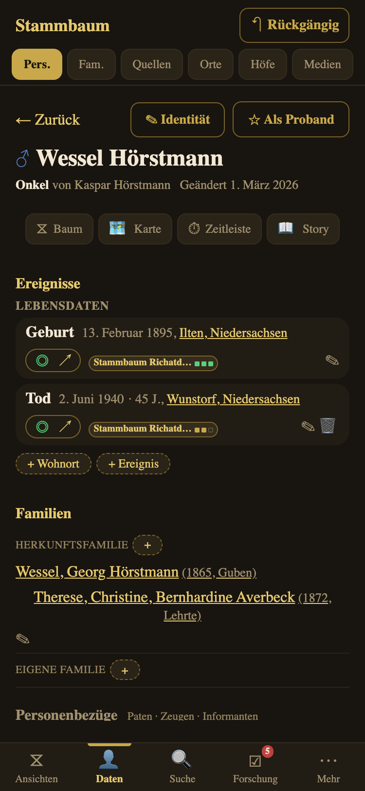
So legen Sie eine Person an
- In der Personenliste auf + Neue Person tippen.
- Namen und Geschlecht eintragen. Der Name wird beim Speichern automatisch in Vor- und Nachname zerlegt — Sie müssen nichts doppelt eingeben.
- Über + Ereignis und + Wohnort die Lebensdaten ergänzen (siehe unten).
- Die Person mit den Eltern bzw. einer Familie verbinden (siehe Kapitel 5).
Doch nicht? Verlassen Sie die neu angelegte Person mit Fertig oder ← Zurück, ohne etwas eingetragen zu haben, wird sie wieder entfernt — es bleibt kein namenloser Rumpf in Ihrer Datei zurück. Sobald auch nur ein Feld gefüllt ist, bleibt der Datensatz selbstverständlich stehen. Dasselbe gilt für Neue Quelle und Neues Archiv.
So erfassen Sie ein Ereignis
Jedes Ereignis (Geburt, Heirat, Beruf, Wohnort …) trägt Datum, Ort und Quellen. Zwei Felder verdienen besondere Aufmerksamkeit:
Das Datum
Datumsangaben dürfen unscharf sein — genau wie in der echten Forschung. Erlaubt sind
volle Daten, nur Jahre, sowie Näherungen mit um, vor,
nach und Zeiträume (zwischen … und …). Erfundene
Genauigkeit hilft niemandem — tragen Sie ein, was die Quelle hergibt.
Wo die Quelle etwas sagt, das kein Datumsformat fasst — „am Sonntag nach Ostern", „im Jahr der großen Flut" —, trägt das Ereignis zusätzlich eine Datumsphrase. Sie erscheint kursiv in der Ereigniszeile, auch dann, wenn gar kein gerechnetes Datum daneben steht: Der Wortlaut der Quelle geht nicht verloren, nur weil er sich nicht in Zahlen übersetzen lässt.
Der Ort
Ein Ort ist zunächst nur Text. Sein voller Wert entsteht erst, wenn er mit einem Ortsobjekt verknüpft ist: Erst dann erscheint er auf der Karte, zählt in der Statistik richtig und verbindet Zeitgenossen.
Die Konfession ist ein Ereignis, keine Eigenschaft
Konfession steht in der Ereignisliste und nicht in den Stammdaten — aus einem fachlichen Grund: Ein Konfessionswechsel hat ein Datum, oft einen Ort und fast immer eine Quelle. Als bloßes Textfeld am Steckbrief konnte davon nur das Wort selbst überleben; als Ereignis trägt es alles, was die Urkunde hergibt — und ein Übertritt bleibt als Ereignis in der Lebensgeschichte sichtbar, statt eine ältere Angabe zu überschreiben. Beim Erfassen schlägt die App die gängigen Werte vor (röm.-kath., evang., katholisch); freier Text ist erlaubt.
Ein Ereignis wieder entfernen
Dieselbe Stelle, zwei Stufen — je nachdem, ob etwas verloren gehen kann. Ein noch leeres Ereignis trägt ein ✕ und verschwindet sofort; da ist nichts zu retten. Ein befülltes Ereignis trägt ein 🗑 und fragt vorher nach — und die Rückfrage nennt, was geht: Datum, Ort, Wert, Notiz, Quellenzitate und die Medien-Verknüpfungen dieses Ereignisses.
Doppelte Personen finden und zusammenführen
Über Werkzeuge → Duplikate suchen vergleicht die App alle Personen paarweise und listet mögliche Dubletten — nach einem Ähnlichkeits-Score (0–100) sortiert, den ein Schwellenwert-Regler nach oben oder unten öffnet. Jede Zeile nennt die beiden Kandidaten, ihre Lebensdaten und die Gründe für den Verdacht (etwa „Nachname identisch · Geburtsjahr ±1 · Vater identisch").
Ein Antippen öffnet den Zusammenführen-Dialog: Dort entscheiden Sie feldweise, welche Angaben der überlebende Datensatz behält.
Was dabei mit umzieht, ist mehr als die sichtbaren Felder: Namensvarianten, Personenbezüge (Paten, Zeugen) und die Verweise Ihrer Hypothesen hängen sich auf den überlebenden Datensatz um. So zeigt keine Beweisführung nach dem Zusammenführen ins Leere — und eine Hypothese, die durch den Merge ihren Bezugspunkt verliert, bleibt als Befund im Text stehen, statt still zu verschwinden.
Ein Paar, das erkennbar kein Duplikat ist, halten Sie als „kein Duplikat" fest — mit einer Begründung, denn genau die ist das Ergebnis Ihrer Prüfung („zwei Vettern gleichen Namens, Taufpaten verschieden"). Der Befund wandert als abgelehnte Identitäts-Hypothese in Ihre Genealogie-Datei: er reist mit ihr auf jedes Gerät und zum Mitforscher, ist über Rückgängig zurücknehmbar und erscheint bei beiden Personen. Das Paar taucht in der Dublettensuche nicht wieder auf.
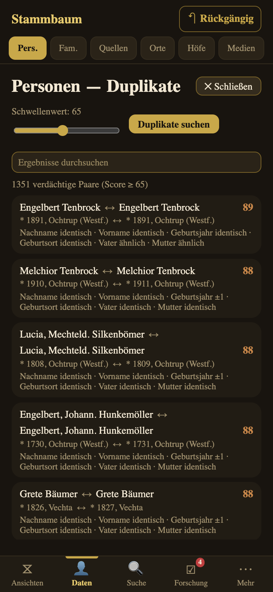
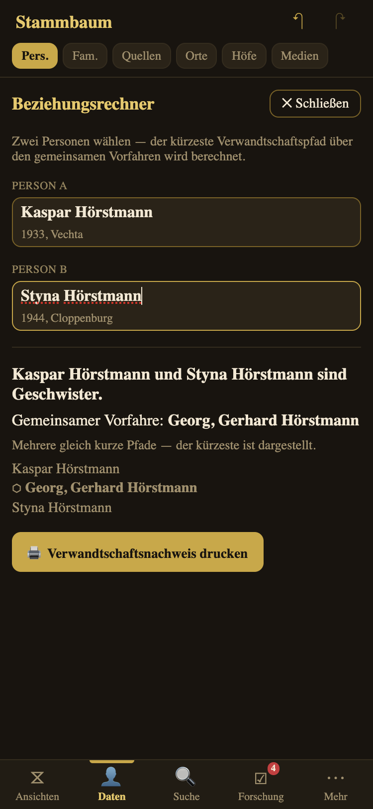
Verwandtschaft berechnen
Das zweite Werkzeug der Personenliste beantwortet eine Frage, die von Hand mühsam ist: Wie sind zwei Menschen verwandt? Über Werkzeuge → Verwandtschaft berechnen wählen Sie Person A und Person B (A ist mit dem Proband vorbelegt). Die App sucht den gemeinsamen Vorfahren, benennt den Grad („Geschwister", „Cousin/Cousine 2. Grades" …) und zeigt den kürzesten Pfad Person für Person — mit dem gemeinsamen Vorfahren als markiertem Knoten.
🖨 Verwandtschaftsnachweis drucken erzeugt daraus ein druckfertiges Dokument — dieselbe Ausgabe-Mechanik wie die Reports, nur hier zur Hand, wo beide Personen schon gewählt sind.
Dasselbe Muster gilt für alle Datenarten — Personen, Familien, Quellen, Archive, Medien, Orte und Höfe: „… löschen" steht überall unten, in einer optisch abgesetzten Zone mit Trennlinie, und niemals in der Knopfreihe neben „Speichern". Ein Löschen soll man suchen müssen, nicht danebentreffen.
5. Familien
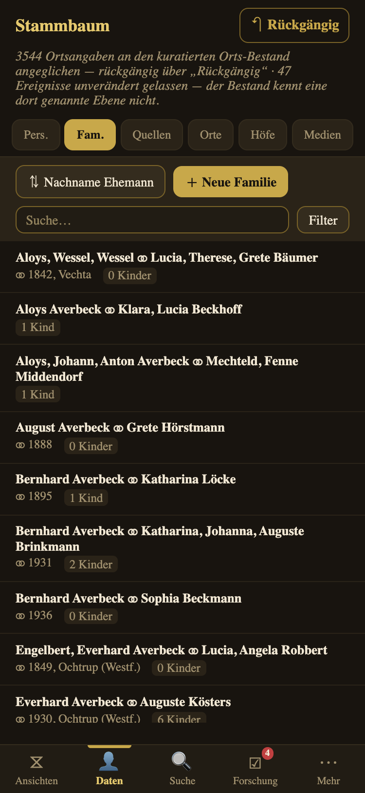
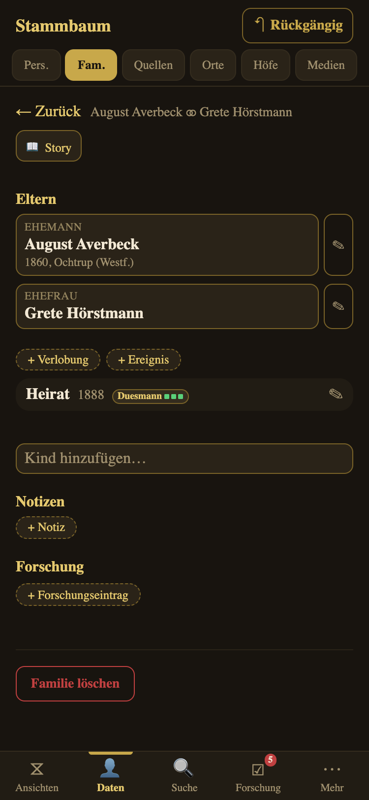
Der Bereich Familien listet alle Ehen/Verbindungen; ein Sortier-Umschalter mit drei Zuständen und ein Filter helfen beim Finden.
Die Familien-Detailansicht
- Eltern — Ehemann und Ehefrau, jeweils anklickbar.
- Familien-Ereignisse wie Verlobung und Heirat (mit Ort, Koordinaten und Quellen wie bei Personen).
- Kinder — die Liste ist anklickbar; über „Kind hinzufügen…" wird eine Person zugeordnet, das ✕ löst sie wieder. Die Kinder stehen chronologisch nach Geburtsdatum (undatierte am Ende), hier wie im Personen-Steckbrief. Sortiert wird allein die Anzeige — in Ihrer Datei bleibt die Reihenfolge, wie sie ist.
- Ein Kind neu anlegen geht direkt aus der Familie heraus: die neue Person ist sofort zugeordnet, Sie füllen nur noch den Steckbrief.
- Wie sicher ist die Kindschaft? Zu jedem Kind lässt sich
festhalten, worauf die Zuordnung beruht — leiblich, adoptiert,
Pflegekind, Stiefkind — und das je Elternteil getrennt. Ein Kind kann leiblich
zur Mutter und adoptiert zum Vater gehören; genau das ist der Fall, den eine
einzige Angabe verschweigen würde. Die Angabe wird als
PEDI/_FREL/_MRELgeschrieben und beim Laden wieder gelesen. - Auch die Familie führt einen Abschnitt Forschung — Aufgaben, Hypothesen und Protokoll-Einträge zur Verbindung selbst, nicht zu einem der Partner.
- Auch ohne Trauung ist eine Familie gültig — eine Verbindung mit gemeinsamen Kindern und ohne Heiratseintrag ist genealogischer Alltag, kein Sonderfall.
Ereignisse, die zu Personen und Familien gehören (etwa eine Heirat), teilen sich dieselbe Ereigniszeile — Sie pflegen sie nur an einer Stelle.
Einen Elternteil tauschen — oder es sich anders überlegen. Das ✎ neben Ehemann bzw. Ehefrau blendet das Suchfeld an Ort und Stelle ein. Sie verlassen es jederzeit wieder, ohne etwas zu wählen: über das ✕ daneben, mit Esc oder indem Sie danebentippen. Ein Auswahlfeld, das nur die Auswahl als Ausgang kennt, wäre eine Falle — und war hier einmal eine.
So verbinden Sie zwei Menschen zu einer Familie
- Im Steckbrief einer Person die Herkunftsfamilie oder eine eigene Familie öffnen bzw. neu anlegen.
- Den fehlenden Partner über den Personen-Picker zuordnen — oder direkt neu anlegen, wenn es ihn noch nicht gibt.
- Die Heirat als Familien-Ereignis erfassen (Datum, Ort, Quelle) — sie erscheint danach bei beiden Partnern.
- Die Kinder zuordnen. Wer beide Elternteile hat, taucht im Sanduhr-Baum automatisch an der richtigen Stelle auf.
6. Quellen und Archive
Quellen belegen Ihre Angaben. Der Bereich Quellen hat zwei Segmente: Quellen und Archive (Repositorien). Die Quellenliste zeigt jede Quelle mit der Zahl ihrer Referenzen.
Die Quellen-Detailansicht
- Titel, Verlag/Fundstelle (z. B. eine Matricula-Adresse),
- Referenzen — welche Personen und Ereignisse diese Quelle zitieren,
- je Zitat die Beweiskraft als QUAY 3-Marke mit einem kleinen Punkte-Balken (0–3 gefüllte Punkte),
- Abdeckung und Behörde — was ein Registerband überhaupt umfasst („Taufen 1803–1875") und wer ihn geführt hat. Beides steht in vielen Dateien längst drin und blieb bisher unsichtbar; gerade bei Kirchenbüchern ist es die Angabe, an der man erkennt, ob ein fehlender Eintrag etwas bedeutet oder nur außerhalb des Bandes liegt,
- Erfasst am — wann Sie (oder Ihr voriges Programm) diese Quelle angelegt haben. Nicht zu verwechseln mit dem Alter der Quelle selbst.
- Wortlaut und Notiz — zwei getrennte Textflächen, weil es zwei verschiedene Dinge sind: der Wortlaut ist das Zitat aus der Quelle (die Transkription), die Notiz Ihre Anmerkung über sie („Film schlecht lesbar", „zweite Hand, spätere Nachtragung"). Früher gab es nur ein Feld, es hieß „Notiz" und speicherte in Wahrheit die Transkription — wer eine Bemerkung erfasste, schrieb sie an die falsche Stelle.
Evidenzbewertung
Zu jedem Quellenbezug lässt sich eine Bewertung nach drei Achsen erfassen (Herkunft, Information, Beweiskraft). Die Beweiskraft fließt in die QUAY-Anzeige ein.
Die Bewertung sitzt an der Zitat-Zeile selbst: ein Antippen des Punkte-Balkens klappt sie auf — Herkunft (Original/Abschrift/abgeleitet), Information (Primär-/Sekundärinformant) und Beweiskraft (direkt/indirekt/negativ). Solange nichts bewertet ist, bleibt der Aufklapper zu; die Achsen drängen sich also nicht in jede Zeile.
Vorlagen beim Anlegen
Beim Anlegen einer Quelle bietet die App Vorlagen für die häufigen Quellenarten an (Kirchenbuch, Standesamt, Grabstein, Zeitung …). Sie füllen Titelmuster und die passende Bewertungs-Vorgabe vor — Sie ändern, was abweicht, statt jedes Feld neu zu tippen.
Archive
Archive/Repositorien werden mit Detailansicht und Signatur geführt und lassen sich beim Anlegen einer Quelle über einen Picker zuordnen.
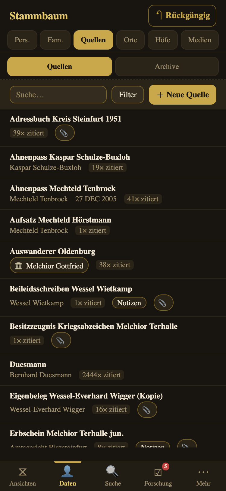
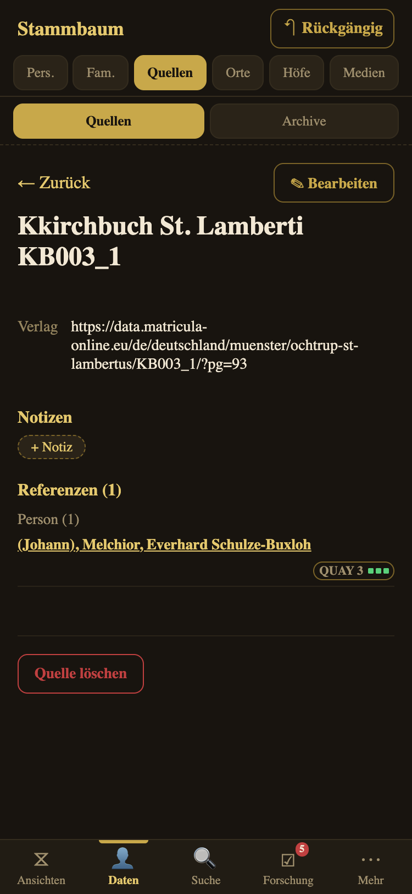
So belegen Sie eine Angabe
- Die Quelle einmalig anlegen (Titel, Fundstelle, ggf. Archiv).
- Beim Ereignis die Quelle zuordnen — dieselbe Quelle kann viele Ereignisse belegen.
- Die Beweiskraft und die Evidenz-Achsen bewerten. Die Bewertung erscheint als Punkte-Balken (0–3 gefüllte Punkte) an der Quellen-Marke der Ereigniszeile.
- Übernehmen Sie eine Quellen-Vorlage, schlägt die App gleich den passenden Forschungsschritt fürs Protokoll vor („Kirchenbuch X, Jahrgang Y geprüft") — ein Klick, und der Eintrag steht, statt dass er später aus dem Gedächtnis rekonstruiert werden muss.
Dieselbe Fundstelle mehrfach verwenden
Eine Seite im Kirchenbuch belegt selten nur eine einzige Angabe: Derselbe Taufeintrag nennt Datum, Ort, Eltern und Paten. Damit die Fundstelle nicht viermal von Hand eingetippt wird, hat jede Zitatzeile ein ⧉. Es legt die vollständige Zitation in eine Ablage — Quelle, Seite, Beweiskraft, Notiz, Weblink und die Evidenz-Achsen, nicht nur den Namen.
An jeder anderen Quellen-Sektion erscheint daraufhin ein Chip „📋 Übernehmen: Quelle · Seite" — ein Klick fügt die Fundstelle dort ein. Der Chip steht nur, solange etwas abgelegt ist, und trägt ein eigenes ✕, um die Ablage zu leeren; die Ablage selbst gilt für die laufende Sitzung und wird nicht mitgespeichert. Ein ↗ in der Beschriftung verrät, dass ein Weblink mitreist.
Für GRAMPS-Dateien mit gedacht: Dort ist eine Zitation ein gemeinsamer Datensatz, den mehrere Ereignisse benutzen — die eingefügte Zeile bleibt deshalb zunächst dieselbe Fundstelle und löst sich erst von ihr, sobald Sie sie ändern. So entsteht weder eine stille Dublette noch eine Änderung, die ungewollt auf die Ursprungszeile durchschlägt.
7. Erfassung: ein Registereintrag in einem Zug
Ein Trauregister-Eintrag nennt Braut und Bräutigam, meist beide Elternpaare, Datum und Ort der Trauung — und steht auf einer bestimmten Seite eines bestimmten Kirchenbuchs. In der üblichen Arbeitsweise werden daraus sechs Formulare, zwei Familien und ein Dutzend Mal dieselbe Quellenangabe. Die Erfassung macht daraus eine Fläche und einen Speichervorgang: Personen, Familien, Ereignisse und der Beleg entstehen gemeinsam — und lassen sich mit einem einzigen ↶ Rückgängig wieder zurücknehmen. Wer ein Kirchenbuch systematisch durcharbeitet, erfasst so Eintrag für Eintrag, ohne die Fläche zu verlassen.
Zu finden ist sie am Handy unter Mehr → Erfassung, am Computer in der Seitenleiste unter ARBEIT. Sie ist ein eigenes Arbeitsziel und kein Werkzeug der Personenliste — was hier entsteht, gehört keiner einzelnen Datenart.
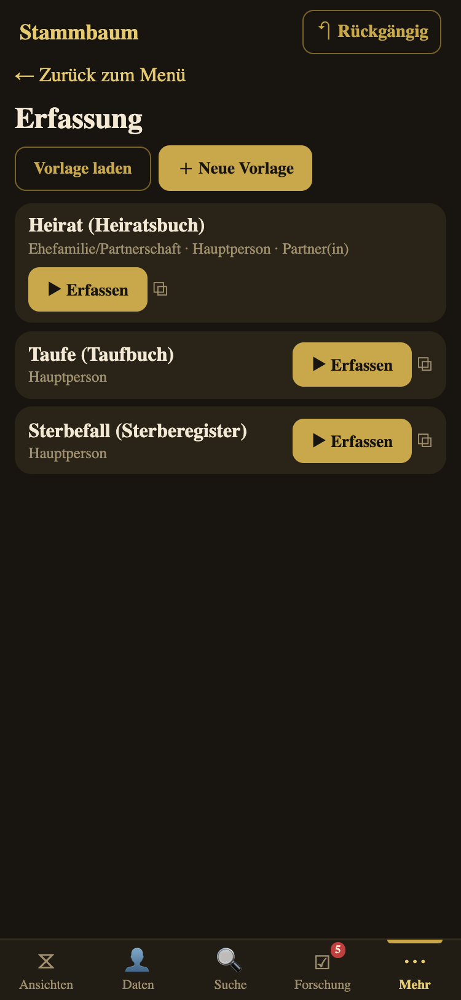
Vorlagen — der Einstieg
Eine Vorlage beschreibt einen wiederkehrenden Quelleneintrag: welche Personen und Familien er nennt und welche Felder dafür auszufüllen sind. Drei bringt die App mit — Heirat (Heiratsbuch), Taufe (Taufbuch) und Sterbefall (Sterberegister). Unter dem Namen steht, welche Rollen die Vorlage trägt. Die Taufe fragt dabei nach dem Geschlecht — im Taufbuch steht es —, während die Heirat es aus den Rollen mitbringt: Bräutigam und Braut sind dort keine Frage, sondern Teil der Vorlage.
Je Zeile: ▶ Erfassen öffnet die Erfassungsfläche, ⧉ legt eine bearbeitbare Kopie an, ✎ und 🗑 ändern bzw. entfernen eigene Vorlagen. Die mitgelieferten sind bewusst nur kopierbar: Sie behalten damit immer einen unveränderten Ausgangspunkt. ＋ Neue Vorlage beginnt bei null, Vorlage laden übernimmt eine aus einer Datei (siehe unten).
Die Erfassungsfläche
Die Fläche zeigt die Felder der Vorlage, nach Rollen gruppiert: Hauptperson, Vater, Mutter, Partner(in), deren Eltern sowie die drei Familien-Rollen (Elternfamilie, Elternfamilie der Partnerin bzw. des Partners, Ehefamilie). Ein Heiratsdatum ist damit ein Feld der Familie und kein Sonderfall an einer Person. Eingegeben wird mit denselben Bausteinen wie überall in der App: dieselbe Datumszeile mit exakt / um / vor / nach, derselbe Ortspicker, dieselbe Quellen-Sektion — die Erfassung ist eine Abkürzung, keine zweite Bedienwelt.
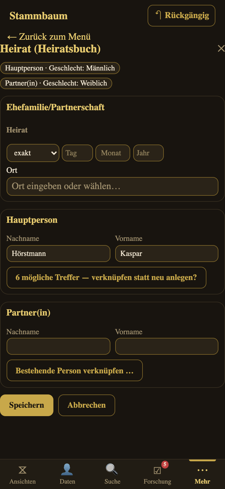
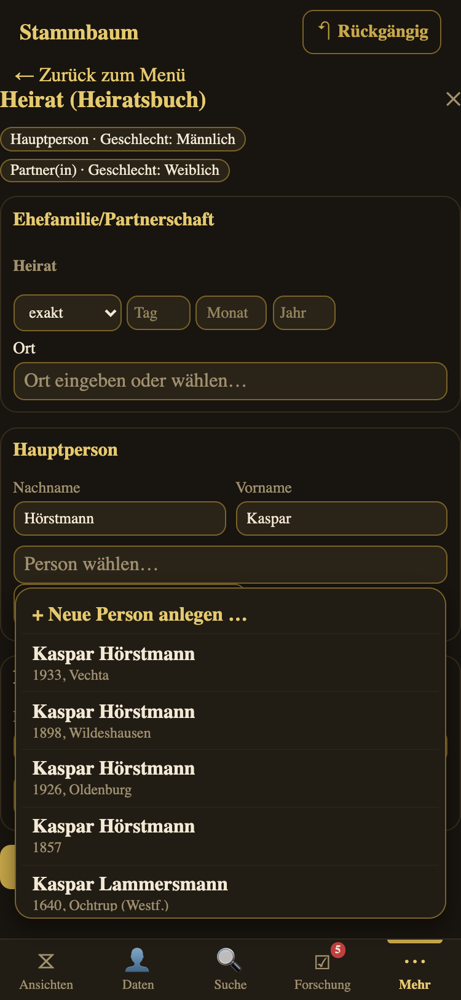
Vor dem Speichern existiert kein Datensatz. Die Fläche hält einen Entwurf; erst Speichern legt an — und zwar alles zusammen, in einem Schritt, der als ein Schritt zurückgenommen werden kann. Wer abbricht, hinterlässt nichts.
Dubletten werden vorgeschlagen, nicht gebunden. Während Sie Vor- und Nachnamen eintragen, vergleicht die App den entstehenden Datensatz mit dem Bestand — mit demselben Ähnlichkeitsmaß wie die Duplikatsuche, kein zweiter Maßstab. Passt etwas, erscheint „N mögliche Treffer — verknüpfen statt neu anlegen?"; ein Tipp darauf öffnet den gewohnten Personen-Picker mit genau diesen Kandidaten (mit Geburtsjahr und Ort zur Unterscheidung), „Alle Personen durchsuchen" hebt die Einschränkung auf. Verknüpft wird ausschließlich durch Ihren Klick: ein Namensgleichklang ist schwächere Evidenz als eine Familienbindung und darf nicht selbsttätig in fremde Datensätze schreiben.
Eine verknüpfte Person wird ergänzt, nie überschrieben. Leere Felder füllt die Erfassung, belegte lässt sie stehen — und ein Ereignis, das keine Sondersemantik trägt, kommt stets als neues hinzu, statt ein vorhandenes zu überschreiben. Welches von mehreren gemeint wäre, kann niemand entscheiden.
Vorbelegte Werte und die Sichtbarkeitsregel
Eine Vorlage kann Felder vorbelegen — in drei Formen, die sich nicht nur in der Anzeige unterscheiden:
- Versteckt. Der Wert wird beim Speichern übernommen, erscheint aber nicht als Feld, sondern als Chip im Kopf der Fläche („Hauptperson · Geschlecht: Männlich"). Für das, was im ganzen Register gleich ist.
- Sichtbar, gesperrt. Der Wert steht im Feld und ist nicht änderbar.
- Vorbelegt, änderbar. Der Wert ist ein Startpunkt; was Sie hineinschreiben, gilt. Sonst wäre „änderbar" eine Anzeige-Lüge.
Daran hängt eine Regel, die vor stillen Anlagen schützt: ob eine Vorbelegung einen Datensatz entstehen lässt, entscheidet allein ihre Sichtbarkeit. Ein versteckter Wert allein legt nichts an — niemand hat ihn zu Gesicht bekommen. Ein sichtbarer zählt wie eine Eingabe. Ob ein Datenbündel sinnvoll ist, beurteilt der Mensch, der auf Speichern drückt; die App stellt nur sicher, dass sichtbar war, was gespeichert wird. Und wo nichts entstanden ist, meldet die Fläche genau das („Nichts erfasst — es war kein Feld ausgefüllt.") statt eines Erfolgs, den es nicht gab.
Der Beleg läuft mit
Trägt die Vorlage eine Quellen-Vorbelegung, zeigt die Fläche die Quelle als Marke und darunter Seite / Fundstelle und Weblink. Beim Speichern hängt dieselbe Zitation an jedem berührten Ereignis — je Ereignis ein eigenes Zitat, wie von Hand angelegt. Genau das ist der Punkt, an dem Erfassungsvorlagen mehr sind als Tipparbeit-Ersparnis: Der Beleg entsteht nicht später und nicht aus dem Gedächtnis, sondern im selben Handgriff wie die Angabe, die er stützt. Passt die vorbelegte Quelle nicht zum geladenen Bestand (weil die Vorlage aus einer fremden Datei stammt), sagt die Fläche das und hängt keine Zitation an — wirkungslos statt falsch.
Familien: wiederverwenden, bei Zweifel fragen
Passt eine vorhandene Familie zu den genannten Eltern, wird sie wiederverwendet statt ein zweites Mal angelegt. Kommen mehrere in Frage, wird gefragt statt geraten: ein Picker zeigt die Kandidaten zur Wahl. Dieselbe Haltung wie bei der Ortsauflösung — bei Mehrdeutigkeit entscheidet ein Mensch.
Serienerfassung und „Mitführen"
Nach dem Speichern bleibt die Fläche offen und setzt sich für den nächsten Eintrag zurück; die Vorbelegungen der Vorlage stehen wieder da. Zusätzlich kann die Vorlage an jedem einzelnen Feld festlegen, dass der eingetippte Wert den Reset überlebt — Mitführen. Der Fall, für den es gebaut ist, ist ein Hofregister: derselbe Nachname über zwanzig Einträge, aber ohne Vorbelegung, weil er von Bestand zu Bestand ein anderer ist. Je Feld, nicht je Block: der Nachname läuft mit, der Vorname nicht. Seite und Weblink der Zitation können ebenso mitlaufen. Die gewählte Person oder Familie läuft bewusst nicht mit — der nächste Taufeintrag betrifft ein anderes Kind, auch wenn der Nachname derselbe bleibt.
Unmittelbar nach dem Speichern prüft die App die neu entstandenen Datensätze mit den Regeln der Datenprüfung — nur diese, kein Durchlauf über den ganzen Bestand — und meldet Befunde direkt an der Fläche. Ein vertauschtes Jahr fällt so beim nächsten Eintrag auf und nicht erst beim nächsten Dashboard-Lauf.
Eigene Vorlagen bauen
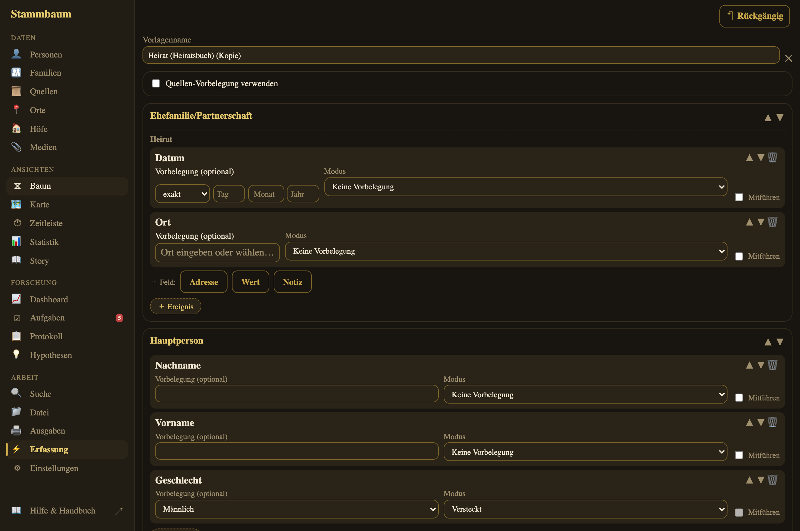
Der Builder öffnet sich über ＋ Neue Vorlage oder über ⧉ an einer bestehenden. Er kennt keine festen Bausätze: Sie fügen je Rolle die Felder hinzu, die Ihr Register nennt — Nachname, Vorname, Geschlecht als Identitätsangaben, dazu beliebige Ereignisse mit Datum, Ort, Adresse, Wert, Notiz. Das Feld-Vokabular ist dasselbe, das die App auch sonst verwendet; es gibt keine zweite Liste, die auseinanderlaufen könnte.
- Reihenfolge. ▲ und ▼ verschieben eine Feldzeile — und einen ganzen Rollen-Block. Ordnen Sie die Vorlage so, wie der Eintrag im Buch gelesen wird, dann folgt das Abtippen der Vorlage statt umgekehrt.
- Vorbelegung und Modus stehen je Zeile nebeneinander, daneben das Häkchen Mitführen. Eingegeben wird eine Vorbelegung mit demselben Bedienelement wie das Feld, das sie vorbelegt: das Geschlecht über das Auswahlfeld, der Ort über den Ortspicker.
- Quellen-Vorbelegung. Ein Häkchen schaltet sie frei: Quelle, Beweiskraft und Muster für Seite und Weblink. Gespeichert wird bei Ortsangaben der Text, nicht die interne Kennung — so bleibt eine Vorlage von einem konkreten Bestand unabhängig und funktioniert auch in einer anderen Datei.
So bauen Sie eine Vorlage für Ihr Kirchenbuch
- Die nächstliegende mitgelieferte Vorlage mit ⧉ kopieren und umbenennen (z. B. „Taufe St. Lamberti").
- Die Felder ergänzen, die dieses Register nennt — etwa Vater und Mutter, Pate, Beruf des Vaters.
- Was in jedem Eintrag dieses Buches gleich ist, vorbelegen: den Taufort gesperrt oder versteckt, die Quelle als Quellen-Vorbelegung mit Seitenmuster.
- Bei Feldern, die sich über eine Serie hinweg wiederholen, aber nicht zum Buch gehören (Nachname im Hofregister, Seitenzahl), Mitführen ankreuzen.
- Speichern — und die Vorlage über ▶ Erfassen an einem echten Eintrag ausprobieren, bevor Sie eine ganze Serie damit abarbeiten.
Eine Vorlage weitergeben
Vorlagen gehören zu Ihren App-Daten, nicht zur Genealogie-Datei; sie reisen mit dem App-Daten-Bündel auf ein zweites Gerät. Eine einzelne Vorlage geht darüber hinaus als Datei an andere: Als Datei sichern im Builder schreibt sie, Vorlage laden im Kopf der Liste liest sie wieder ein — durch dasselbe Datei-Rohr wie jeder andere Export. Der Import ergänzt, er ersetzt nie: Eine bereits belegte Kennung bekommt eine neue, statt Ihren womöglich weiterbearbeiteten Stand zu überschreiben. Eine mitgeführte Quellen-Vorbelegung trägt den Kurznamen der Quelle als Fingerabdruck mit und wird beim Anwenden geprüft — in einem fremden Bestand bleibt sie wirkungslos, statt auf die falsche Quelle zu zeigen.
8. Orte
Orte sind in Stammbaum eigene Objekte — nicht nur Text in einem Ereignis. Das erlaubt Verwaltungshierarchien, Namensvarianten über die Zeit, Koordinaten und saubere Zusammenführung von Schreibvarianten. Das Orts- und Hofkonzept ist eines der Herzstücke der App — es lohnt sich, es einmal zu verstehen.
orte.json dabei leistet) und dann die
Bedienung (Liste, Steckbrief, Verknüpfen, Zusammenführen, Import/Export).
Das Konzept: zwei Objektarten, eine Wahrheit
In einer GEDCOM-Datei steht bei jedem Ereignis nur ein Ortstext wie „Ochtrup, Kreis Steinfurt, Nordrhein-Westfalen, Deutschland". Für die reine Ablage genügt das — aber Text kann nicht auf einer Karte liegen, weiß nichts von seiner eigenen Geschichte und lässt sich nicht zuverlässig mit einer anderen Schreibweise desselben Ortes zusammenführen. Stammbaum löst diesen Text deshalb gegen zwei eigenständige Objektarten auf:
- Der Ort (PlaceObject) — eine Verwaltungseinheit: ein Dorf, eine Stadt, ein Kirchspiel, ein Kreis, ein Land. Er trägt datierte Namensvarianten (Ochtdorp → Ochtrop → Ochtrup), eine datierte Zugehörigkeitskette (welchem Amt, Kreis, Staat er wann unterstand), Koordinaten, eine Notiz und eine Existenzspanne.
- Der Hof (HofObject) — eine Adresse innerhalb eines Dorfes (Straße, Hausnummer, Hofname). Ein Hof hängt immer an genau einem Dorf, hat eigene Adressvarianten (Umbenennung, Hausnummernreform), eigene Koordinaten (damit Binnenwanderung im Dorf sichtbar wird) und einen eigenen Lebenszyklus.
Beide sind bewusst getrennt: Ein Hof ist keine Verwaltungsebene, und ein Land ist keine Adresse. Diese Trennung ist der Kern des ganzen Systems — sie erlaubt es, dieselbe reale Identität über Jahrhunderte, Schreibweisen und Grenzverschiebungen hinweg als ein Objekt zu führen.
Die Rolle der orte.json
Hier liegt der entscheidende Unterschied zu anderen Programmen. Ihr Wissen über Orte und Höfe — Koordinaten, historische Namen, Verwaltungshierarchien — gehört nicht zu einem Stammbaum, sondern zu der Landschaft, in der Ihre Familien gelebt haben. Dass Ochtrup bei 52,20° N / 7,19° O liegt, 1803 vom Fürstbistum Münster an Salm-Horstmar fiel und heute im Kreis Steinfurt liegt, ist in jeder Ihrer Dateien dasselbe.
Deshalb bewahrt Stammbaum diesen Bestand in einer eigenen Datei
orte.json auf — getrennt von der Genealogie-Datei:
- Stammbaum-übergreifend. Ein einmal gepflegter Ort steht allen Ihren Dateien zur Verfügung. Sie recherchieren Ochtrups Geschichte einmal, nicht in jeder Datei neu.
- Nicht in der GEDCOM-/GRAMPS-Datei. Die Zeitachse (historische
Namen, datierte Zugehörigkeiten) kann GEDCOM gar nicht abbilden. Beim Export
wird sie auf den im Ereignisjahr gültigen Ortstext zusammengefaltet —
die volle Historie bleibt in
orte.json, Ihre Datei bleibt standardkonform und verliert nichts (siehe Kapitel 19). - Ein Spiegel im Gerät. Damit die Karte sofort funktioniert, hält
die App eine Kopie von
orte.jsonim Browser-Speicher. Import und Export gehen über Datei → Orte importieren / Orte exportieren. - Die Datei ist die Wahrheit. Der Orte-Editor hält keine Kopie im Gerät: Sie öffnen eine Datei, bearbeiten sie und speichern sie zurück — wie in einem Textprogramm. Nur gegen einen Absturz merkt er sich einen Entwurf, der beim Speichern verfällt.
- Geräteübergreifend zusammengeführt. Pflegen Sie Orte auf mehreren Geräten, führt die App die Bestände beim Abgleich verlustfrei zusammen (Vereinigung, kein Überschreiben).
Was in die Genealogie-Datei gehört (die belegte Tatsache: „geboren in Ochtrup") und was in den Ortsbestand gehört (das Weltwissen: „Ochtrup liegt hier und hieß früher so"), ist damit sauber getrennt — und beides an seinem richtigen Platz.
Automatisch angelegt, von Hand veredelt
Sie müssen nicht bei null anfangen: Beim Öffnen einer Datei legt Stammbaum aus den vorhandenen Ortstexten automatisch Ortsobjekte an (ein Dorf je distinkter Schreibhierarchie) und löst die Ereignisse dagegen auf — das Orte-Register ist also nie leer. Diese Erst-Anlage ist bewusst grob: Schreibvarianten desselben Ortes ergeben zunächst getrennte Einträge. Das Veredeln — Dubletten zusammenführen, Koordinaten und Historie ergänzen — geschieht danach mit den Kurationswerkzeugen (siehe unten). Höfe entstehen dagegen nicht automatisch bei jedem Ereignis, sondern nur dort, wo eine echte Adresse vorliegt.
Ein Ort, den Sie geprüft oder angereichert haben, trägt in Liste und Steckbrief die Marke kuratiert. Sie ist keine Zierde, sondern eine Aussage darüber, wer beim Speichern Recht behält: Bei einem kuratierten Ort folgen die Ereignistexte Ihrer periodengerechten Ortskette aus dem Orts-Bestand — die Datei wird also an Ihr Wissen angeglichen. Bei einem nicht kuratierten Ort bleibt stehen, was die Quelldatei schreibt.
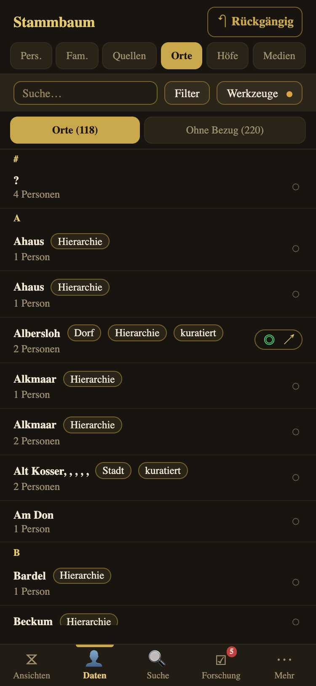
Die Ortsliste
- Varianten gruppiert fasst gleichnamige Schreibweisen zusammen.
- Die Umschalter Orte (N) / Ohne Bezug (N) trennen genutzte von nicht referenzierten Orten.
- Badges wie Hierarchie und ohne Zusatzangaben sowie ein kleiner Ring zeigen den Anreicherungsgrad an.
- Unter Filter → Anreicherung lässt er sich als Arbeitsvorrat eingrenzen: ohne Zusatzangaben · wenig ergänzt · ausführlich. Die drei Stufen beschreiben den Datenstand, nicht Ihre Arbeit — und „wenig ergänzt" ist die Stufe, an der sich Nachpflegen am meisten lohnt.
Der Ort-Steckbrief
Die Abbildung zeigt den angereicherten Ort Ochtrup (Westf.) — ein gutes Beispiel dafür, was ein Ortsobjekt alles trägt:
- Verwaltungszugehörigkeit — aktuell als anklickbare Kette (Ochtrup › Kreis Steinfurt › Nordrhein-Westfalen › Deutschland).
- Zugehörigkeit nach Jahr — die volle Kette je Epoche:
1269 Amt Horstmar, 1803 Grafschaft Salm-Horstmar, 1811 französisches
Kaiserreich, 1815 Königreich Preußen … Genau diese Zeitachse kann eine
GEDCOM-Datei nicht speichern; sie lebt in
orte.json.
Die Ansicht trennt dabei sauber, wessen Geschichte sie erzählt: Jahreszeilen erscheinen nur, wo dieser Ort eine eigene datierte Zugehörigkeit hat. Ist sie undatiert, steht genau eine Zeile „(undatiert)" mit der Kette — und was die übergeordneten Ebenen an Wechseln erlebt haben, steht darunter als eigener, so beschrifteter Block. Ein Dorf, über das nur bekannt ist, dass es zum Kreis Steinfurt gehört, behauptet damit keine zehn eigenen Zugehörigkeitswechsel. - Ereignisse nach Typ: welche Personen hier geboren wurden, heirateten, starben — mit Quellen-Badges.
- Ortszeitgenossen: wer zur selben Zeit am selben Ort lebte.
- Ein Namens-Zeitstrahl hält historische Schreibvarianten fest — dazu Übersetzungen in andere Sprachen (siehe unten).
- Eine kleine Kartenvorschau zeigt die Lage, sobald Koordinaten hinterlegt sind.
Über ✎ Bearbeiten sind alle Felder pflegbar — auch bestehende Einträge: Ein Namens-Eintrag mit falsch getipptem Jahr und ein Zugehörigkeits-Zeitraum lassen sich korrigieren, statt gelöscht und neu angelegt werden zu müssen. Zeiträume dürfen dabei vorne offen sein („bis 1806") — die Zeit davor verschwindet nicht aus der Geschichte, nur weil kein Anfangsjahr bekannt ist.
Jahr oder Stichtag — beides im selben Feld
Grenzen von Zugehörigkeiten und von Ortsnamen nehmen wahlweise ein Jahr
(1810) oder ein tagegenaues Datum (1 OCT 1810). Beides
steht im selben Feld; die App erkennt, was Sie getippt haben. Das ist kein
Detailluxus: Gebietsreformen und Umbenennungen haben oft ein bekanntes Datum
(Kotzenau wurde am 8. Mai 1945 zu Chocianów), und ein Ereignis vom Januar
desselben Jahres gehört dann noch zum alten Namen. Was die App nicht tut,
ist raten: Eine Eingabe, die weder als Jahr noch als Datum lesbar ist, wird
abgelehnt statt still auf ein Jahr gerundet.
Wenn zwei Zugehörigkeiten sich überschneiden, muss die App für ein Ereignisjahr eine wählen — und sagt das, statt es zu verschweigen: ein ⚠ am Ende der betroffenen Kettenzeile weist darauf hin, dass hier mehr als eine Angabe gilt. Die Auflösung ist eine Korrektur der Zeiträume, kein Klick: Meist ist ein Anfangs- oder Endjahr zu eng oder zu weit gefasst.
Tag und Jahr bleiben von selbst deckungsgleich. Ein datierter
Eintrag trägt intern beides — das Jahr und, wo bekannt, den Stichtag. Wer die
orte.json einmal von Hand bearbeitet hat, kann die beiden auseinander
laufen lassen; dann zeigte die Zeitachse ein anderes Jahr an, als die Ortsauflösung
benutzt. Beim Laden zieht die App das Jahr deshalb an den Stichtag nach — aber nur,
wo wirklich ein tagegenaues Datum vorliegt. Ein ABT 1700 bleibt
unangetastet; eine Schätzung wird nicht in Scheingenauigkeit verwandelt.
„Ort löschen" steht nicht in der Knopfreihe neben Speichern, sondern ganz unten in der abgesetzten Zone — dieselbe Stelle wie bei Person, Familie und Quelle. Es setzt die betroffenen Ereignisse behutsam auf ihren reinen Textstand zurück; die Ereignisse selbst gehen nie verloren.
Was „Verwerfen" verwirft
Im Bearbeiten-Modus gibt es zwei Arten von Änderung, und der Steckbrief macht die Grenze sichtbar, statt sie zu verwischen: Der Block Grunddaten (Name, Anzeigename, Typ, Koordinaten, GOV-Angaben) sammelt Ihre Eingaben und schreibt sie erst bei Speichern; Verwerfen stellt genau diese Felder wieder her — und lässt den Bearbeiten-Modus offen. Alles andere — Namensvarianten, Zugehörigkeits-Zeiträume, bei Höfen Adressen und Dorfwechsel — wirkt sofort, weil daran Folgeänderungen hängen (eine Hof-Umbenennung zieht durch alle referenzierenden Ereignisse). Ein „Abbrechen", das diese Wirkung zurückzunehmen verspräche, wäre eine Unwahrheit. Wollen Sie so etwas zurücknehmen, ist ↶ Rückgängig das richtige Werkzeug.
„Geprüft markieren"
Im Kopf des Steckbriefs — neben ✎ Bearbeiten, nicht darin — sitzt ein Schalter, der eine Frage beantwortet, die die Daten selbst nicht beantworten können: Hat hier schon einmal ein Mensch hingesehen? Ein Ort, an dem nichts zu ergänzen war, sieht sonst genauso unbearbeitet aus wie einer, den nie jemand angefasst hat. Ein Tipp macht daraus „✓ Geprüft" samt Datum; ein weiterer nimmt die Markierung zurück. Das Datum steht auf dem Knopf und nicht nur im Tooltip — auf einem Touchgerät gäbe es einen Tooltip gar nicht. Sie wird nie automatisch gesetzt — Bearbeiten allein genügt nicht — und bedeutet „angesehen und für richtig befunden", nicht „vollständig". Denselben Schalter tragen die Höfe.
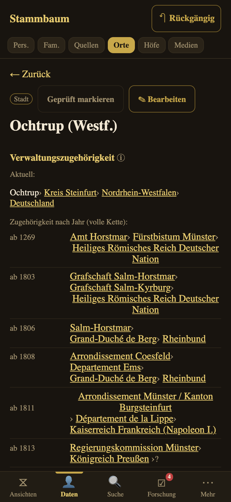
GOV-Eintrag übernehmen
Das Geschichtliche Ortsverzeichnis (GOV) hält für viele deutsche Orte genau das, was eine GEDCOM-Datei nicht speichern kann: die Verwaltungszugehörigkeit Epoche für Epoche. Im Bearbeiten-Modus eines Ortes nimmt die Sektion „GOV-Eintrag übernehmen" die Textzusammenfassung einer GOV-Seite entgegen — kopieren, einfügen, übernehmen. Die App liest daraus Ortstyp, fremdsprachige Namen und die datierte Zugehörigkeitskette heraus.
- Bewusst ohne Netzabruf: der Einfüge-Weg funktioniert auch offline im Archiv.
- Fill-if-empty — Übernommenes füllt nur Lücken und überschreibt nichts, was Sie selbst recherchiert haben.
- Unbekannte Elternorte der Kette legt die App als Platzhalter an; der Schritt ist ein normaler Vorgang und mit ↶ Rückgängig zurücknehmbar.
Koordinaten, Kartenvorschau und Geocoding
Koordinaten sind die Grundlage jeder Karten-Darstellung. Liegen sie vor, zeigt der Steckbrief eine statische Kartenvorschau der Lage — sie kommt ohne Kartendienst aus und funktioniert damit auch offline; die volle interaktive Karte erreichen Sie über den Pfeil ↗ in einer Ereigniszeile.
Koordinaten tragen Sie beim ✎ Bearbeiten von Hand ein — oder Sie lassen sie bestimmen: 📍 Via Nominatim geocodieren schlägt anhand des Ortsnamens Koordinaten (und, wenn noch keiner gesetzt ist, den Ortstyp) vor. Für den ganzen Bestand auf einmal gibt es in der Ortsliste unter Werkzeuge die Aktion „📍 Alle ohne Koordinaten geocodieren" — ein ratenbegrenzter Stapellauf mit Fortschrittsanzeige.
Ortsnamen in anderen Sprachen
Neben den historischen Schreibvarianten (dieselbe Sprache, andere Schreibung) hält ein Ort seine Übersetzungen fest: derselbe Ort in einer anderen Sprache, jeweils mit vorangestelltem Sprachkürzel — etwa der lateinische Name in einem Kirchenbuch oder der polnische Name eines ostdeutschen Dorfes. So bleibt für ausgewanderte Linien und mehrsprachige Regionen nachvollziehbar, unter welchem Namen ein Ort in welcher Quelle erscheint.
Verknüpfen, prüfen, zusammenführen
- Text → Ort verknüpfen: Ein reiner Orts-String im Ereignis wird einem Ortsobjekt zugeordnet — die Anzeige aktualisiert sich sofort.
- Orts-Review arbeitet unklare Zuordnungen ab. Stehen mehrere
gleichnamige Orte zur Wahl, zeigt jede Kandidatenzeile, was die Entscheidung
tatsächlich trägt: die volle Kette, die Verwaltungsebene
(Stadt ⇄ Kreis — bei zwei „Münster" genau der Unterschied), den
Anreicherungsgrad und ein ✓ geprüft, wo schon jemand
hingesehen hat. Passt keiner der Kandidaten, führt „Quelle schärfen"
zurück ans Ereignis, um Ortstext oder Adresse zu präzisieren.

Orts-Review, Klasse P: jede Kandidatenzeile nennt Verwaltungsebene und Anreicherungsgrad - Massen-Zusammenführung bündelt Konfliktgruppen (mehrere Schreibweisen desselben Ortes) und kennzeichnet die Herkunft. Die Ereignisse der aufgelösten Orte hängen sich dabei auf den Sieger um — nach einem Merge zeigt kein Ereignis mehr auf einen „nicht gefundenen Ort", und keines fällt in die Review-Liste zurück, das vorher eindeutig zugeordnet war.
Eine Korrektur wirkt bis ins Ereignis
Der wichtigste stille Dienst der Ortsverwaltung: Wenn Sie an einem Ort etwas korrigieren, das seine Identität ausmacht — den Namen, die Verwaltungszugehörigkeit, die Zuordnung zu einem übergeordneten Ort —, dann ziehen die betroffenen Ereignisse mit. Und zwar nicht nur die dieses einen Ortes, sondern die seines ganzen Teilbaums: Wer „Amt Meinersen" in „Vogtei Meinersen" ändert, ändert damit die Ortsangabe jedes Ereignisses in jedem Dorf darunter.
Das klingt nach einer Kleinigkeit, entscheidet aber darüber, ob Ihre Arbeit den nächsten Programmstart überlebt: Der Ortstext im Ereignis ist die Brücke zwischen Ihrer Datei und Ihrem gepflegten Ortsbestand. Bliebe er auf dem alten Stand stehen, würde die App beim nächsten Laden einen zweiten, gleichnamigen Ort anlegen — die Korrektur hätte genau die Dublette erzeugt, die sie beseitigen sollte.
Orts-Datei importieren und exportieren
Über Datei → Orte importieren / Orte exportieren pflegen Sie einen wiederverwendbaren Orts-Bestand (Koordinaten, Hierarchien, Namensvarianten) als JSON-Datei. Beim Import werden vorhandene Orte angereichert und die Ereignisse neu aufgelöst — dadurch erscheinen die Marker auf der Karte (siehe Kapitel 11).
So halten Sie Ihre Orte sauber
- Anreichern: einen vorhandenen Orts-Bestand (Koordinaten, Hierarchien) importieren.
- Zusammenführen: im Werkzeuge-Bereich die Massen-Dedup laufen lassen und Schreibvarianten desselben Ortes bündeln.
- Verknüpfen: übrige Text-Orte einem Ortsobjekt zuordnen — die Anzeige aktualisiert sich sofort.
- Prüfen: die Orts-Review-Liste abarbeiten und den Filter „Ohne Bezug" nutzen, um verwaiste Orte aufzuräumen.
- Abhaken: jeden angesehenen Ort mit „Geprüft markieren" abhaken — auch den, an dem nichts zu tun war. Erst dadurch wird aus „unbearbeitet" die Auskunft „schon angesehen", und der nächste Durchgang kann dort ansetzen, wo wirklich noch niemand war.
9. Höfe

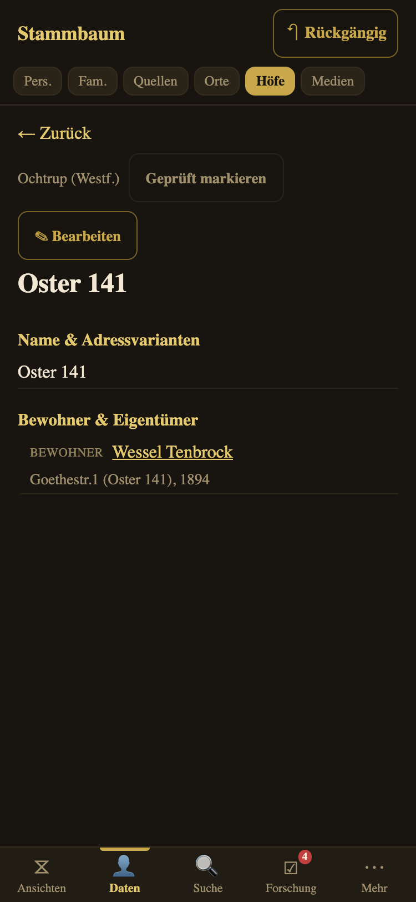
Ein Hof ist eine feinere Ortsebene — eine Adresse innerhalb eines Dorfes. Die Höfe-Liste gruppiert nach Dorf und zeigt darunter Straße und Hausnummer.
- Alle Hof-Felder sind editierbar; eine Umbenennung wirkt durchgängig — auf allen referenzierenden Ereigniszeilen.
- Auch das Dorf eines Hofes lässt sich ändern: über denselben Ortspicker wie am Ereignis. Nützlich nach einer Eingemeindung oder wenn ein Hof beim Import unter dem falschen Dorf gelandet ist — die Bewohner und ihre Ereignisse ziehen mit.
- Hof-Review und Massen-Zusammenführung bereinigen den Bestand analog zu den Orten.
- Wie der Ort trägt auch der Hof Koordinaten und eine Kartenvorschau im Detail — ein Hof kann so präziser verortet sein als sein Dorf (etwa ein einzelnes Gehöft).
- „Hof löschen" entfernt die Hof-Ebene, ohne die Ereignisse zu verlieren — zu finden ganz unten am Steckbrief, in der abgesetzten Lösch-Zone, nicht neben Speichern.
Warum Höfe eine eigene Ebene sind
In ländlichen Regionen ist der Hof die eigentliche Konstante der Familiengeschichte — nicht die Person und nicht das Dorf. Höfe überdauern Generationen, ihr Name geht auf den ein, der einheiratet, und Kirchenbücher notieren jahrhundertelang „Anna, Tochter des Colon Brüning zu Langenhorst" statt einer Adresse. Wer nur das Dorf erfasst, wirft genau die Ebene weg, auf der sich diese Quellen unterscheiden lassen.
Deshalb ist ein Hof in Stammbaum eine eigene Entität und kein Textfeld: Er trägt Adressvarianten (jede Schreibweise, die in Quellen auftaucht), eigene Koordinaten, seine Bewohner und Eigentümer über die Zeit — und lässt sich zusammenführen, wenn zwei Schreibweisen sich als derselbe Hof herausstellen.
10. Medien
Fotos, Urkundenscans, Kirchenbuch-Aufnahmen: Medien sind in Stammbaum eine eigene, gleichrangige Datenart — nicht bloß ein Anhang an einer Person. Jede Datei wird einmal beschrieben und kann an beliebig vielen Stellen erscheinen — Personen, Familien, Quellen — ohne sich zu vervielfachen.
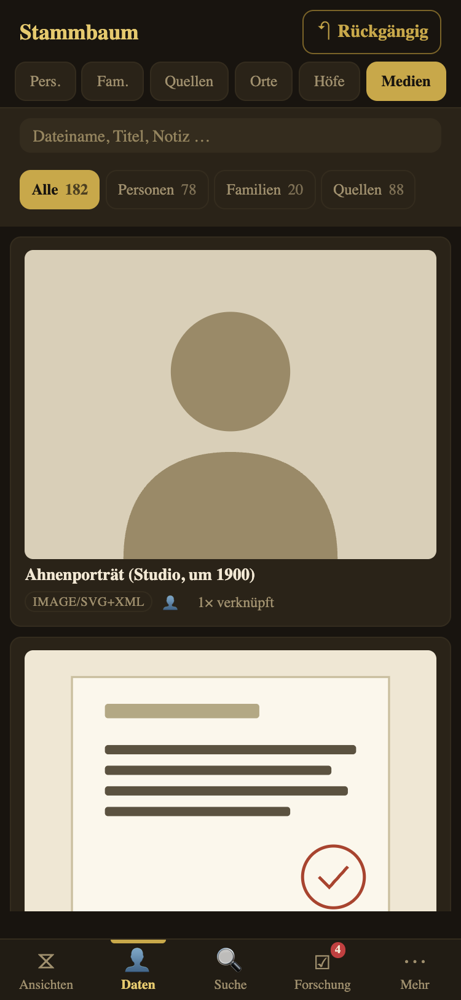
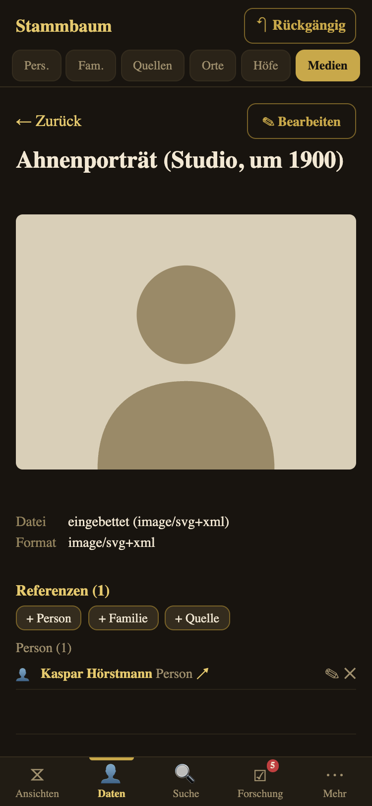
Die Galerie
Das Segment Medien zeigt alle Dateien Ihres Stammbaums als Kacheln — eine globale Arbeitsfläche, nicht in einer einzelnen Person versteckt.
- Die Chip-Reihe Alle · Personen · Familien · Quellen (jeweils mit Zähler) grenzt auf den Bezug ein — sie ist Mehrfachauswahl: „Personen" und „Quellen" gleichzeitig ist eine zulässige Frage, Alle setzt zurück.
- Enthält Ihr Bestand beides — echte Dateien und Weblinks auf Online-Register —, erscheint darüber eine zweite Reihe für die Art (Dateien · Weblinks), mit Dateien als Vorauswahl. Der Grund ist Erfahrung mit großen Beständen: Wo Hunderte Weblinks stehen, schöben sie die wenigen echten Scans sonst aus dem Bild. Versteckt ist nichts — der Weblink-Chip trägt seine Zahl offen daneben. Gibt es nur eine Art, bleibt die Reihe weg, statt einen Chip ohne Alternative zu zeigen.
- Die Suche greift über Dateiname, Titel und Notiz.
- Die Zähler beider Reihen richten sich nach der jeweils anderen Auswahl — ein Chip verspricht also nie mehr Treffer, als er einlöst.
Am Computer nimmt die Galerie die ganze Fläche ein und legt die Kacheln über mehrere Spalten; die Auswahl einer Kachel schaltet auf das Detail um, „← Zurück" führt in die Galerie zurück.
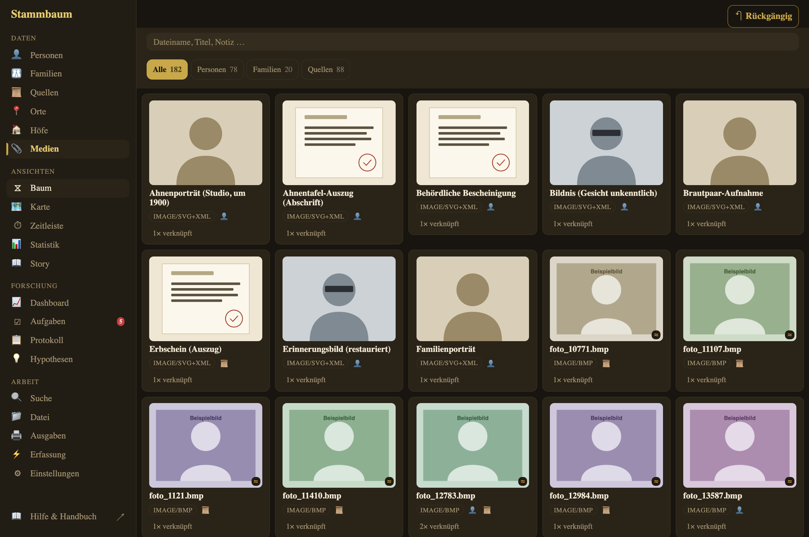
Der Medien-Ordner: einmal freigeben, überall sehen
Eine GEDCOM- oder GRAMPS-Datei speichert keine Bilder, sondern Dateipfade. Damit aus einem Pfad eine sichtbare Vorschau wird, muss die App den Ordner kennen, in dem Ihre Scans liegen. Genau das — und nicht mehr — richten Sie einmalig unter Mehr → Einstellungen → Medien-Ordner ein: Sie wählen den Ordner, der Browser fragt nach der Freigabe, und die App liest ihn (auch die Unterordner) ein.
Von da an zeigt jede Kachel, jeder Steckbrief und jede Ereigniszeile die Vorschau. Kopiert wird dabei nichts: Es bleibt Ihr Ordner mit Ihren Dateien, und die Freigabe gilt nur für dieses Gerät. Nach dem Ergänzen neuer Scans holt „Neu einlesen" sie herein, „Trennen" nimmt die Freigabe zurück.
Eine Kachel sagt Ihnen dabei immer, woran sie ist:
| Anzeige | Bedeutung |
|---|---|
| Vorschaubild | Die Datei wurde gefunden und ist ein Bild. Für die Kacheln wird eine verkleinerte Fassung berechnet — auch ein Ordner voller großer Scans bringt die Galerie so nicht ins Stocken. |
| 📄 | Gefunden, aber kein Bild (etwa ein PDF) — mit Link zum Öffnen. |
| ↗ Domain | Kein Dateiverweis, sondern ein Weblink. Er wird verlinkt, aber nicht abgerufen — die App holt von sich aus nichts aus dem Netz. |
| ⚠ | Ordner verbunden, Datei darin nicht gefunden — ein echter Befund, dem Sie nachgehen können. |
| ≈ | Nur über den Dateinamen zugeordnet, weil der Ordner im Verweis abweicht. Der Treffer stimmt fast immer, aber die Unschärfe wird angezeigt statt verschwiegen. |
| (leere Fläche) | Es ist kein Ordner verbunden. Das ist keine Aussage über die Datei — deshalb steht hier bewusst kein Warnzeichen. |
Bilder dort, wo sie gebraucht werden
Die Galerie ist die Verwaltung — gesehen werden die Bilder anderswo:
- Im Personen-Steckbrief steht das als Primärbild markierte Foto als Porträt.
- In der Ereigniszeile erscheint eine Miniatur, wenn an diesem Ereignis ein eigenes Medium hängt — der Taufeintrag zeigt also seinen Scan.
- Story und die Ausgaben betten die Bilder in das fertige Dokument ein, sodass ein weitergegebenes Familienbuch die Fotos mitbringt, ohne dass die Empfängerin Ihren Ordner braucht.
Ein Medium, zwei Ebenen
Öffnen Sie ein Medium, trennt der Steckbrief bewusst zwei Feldgruppen — dasselbe Muster wie bei Ort und Hof:
- Global (Dateipfad, Format, Medientyp, Titel): gilt für alle Verknüpfungen der Datei. Die Zeile Datei sagt dabei zuerst, welcher Art der Wert ist — ein Pfad, ein Weblink oder ein direkt in der Datei eingebettetes Bild. Ein Klick auf „Speichern (alle Ref.)" ändert die Beschreibung überall zugleich — eine Datei, eine Wahrheit.
- Referenz-spezifisch (Titel-Override, Aufnahmedatum, Notiz, Primärbild): gilt nur für diese eine Verknüpfung. So kann dasselbe Gruppenfoto bei jeder abgebildeten Person eine eigene Bildunterschrift tragen; ein leerer Override fällt automatisch auf den globalen Titel zurück.
Verknüpfen
Die Referenzliste zeigt jede Stelle, an der die Datei auftaucht, und springt per Tipp direkt dorthin. Über „+ Person / + Familie / + Quelle" verknüpfen Sie ein Medium mit einem weiteren Datensatz — über denselben Auswahl-Dialog wie überall sonst in der App, keine Sonderbedienung. Verknüpfungen, die aus einem Ereignis oder einer Quellen-Fundstelle stammen, werden zum Nachschlagen angezeigt und dort bearbeitet, wo sie entstanden sind.
So hängen Sie ein Foto an
- Einmalig unter Mehr → Einstellungen → Medien-Ordner den Ordner freigeben, in dem Ihre Scans liegen (auf iPhone/iPad: Medien importieren).
- Beim Ereignis auf den 📷-Knopf tippen und die Datei wählen — sie ist sofort mit dem Ereignis verknüpft.
- Im Segment Medien die Kachel öffnen und den globalen Titel ergänzen, damit die Datei überall benannt ist.
- Bei Bedarf pro Verknüpfung einen eigenen Titel, ein Aufnahmedatum oder das Primärbild-Kennzeichen setzen — das Primärbild ist es, das später im Steckbrief steht.
11. Diagramme: Baum, Karte, Zeitleiste
Der Bereich Ansichten ist der Umschalter für die grafischen Darstellungen: Baum, Karte und Zeitleiste. Derselbe Umschalter führt auch zur Statistik und zur Story. Jede Ansicht merkt sich ihre eigene Auswahl.
Der Baum: drei Ansichten
Die Baum-Ansicht kennt drei Darstellungen, umschaltbar über die Leiste Sanduhr · Nachkommen · Fächer direkt über dem Diagramm. Die gewählte Ansicht bleibt erhalten, auch wenn Sie zwischendurch zu Karte oder Zeitleiste wechseln. Jedes Diagramm lässt sich per ⤢ Vollbild auf den ganzen Bildschirm ziehen und passt sich automatisch mittig ein; ein Tippen auf eine Kachel (bzw. ein Fächer-Segment) wechselt den Probanden, die Pfeiltasten ↑ ↓ → navigieren zwischen den Personen.
Sanduhr
Die Sanduhr zeigt die gewählte Person in der Mitte, die Vorfahren darüber, ihre Kinder und Geschwister darunter. Die kleinen Ziffern sind die Kekulé-Nummern (1 = Proband, 2 = Vater, 3 = Mutter …); der farbige Rand codiert das Geschlecht. Mehrfach-Ehen (⚭N) und Halbgeschwister (½) werden eigens markiert.
Ein Tipp auf eine Karte rückt den Baum um — die angetippte Person steht danach in der Mitte, und Sie wandern so durch die Generationen. Die Kekulé-Nummern wandern dabei nicht mit: Sie zählen weiter ab Ihrem Probanden, nicht ab der Person, die gerade in der Mitte steht. Die Ziffer bedeutet also immer dasselbe, egal wo Sie sich gerade befinden — und eine Person, die kein Vorfahre des Probanden ist, trägt folgerichtig keine.
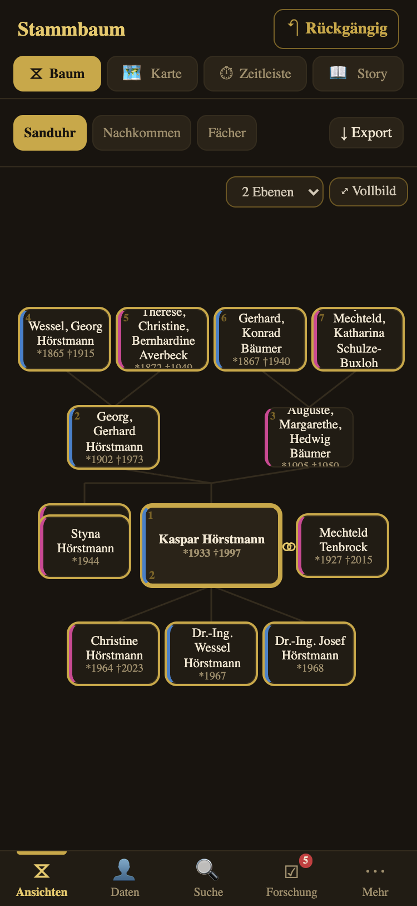
Nachkommen-Baum
Der Nachkommen-Baum stellt eine Person an die Spitze und fächert ihre Kinder, Enkel und weitere Generationen (einstellbar 2 bis 7) nach unten auf — mit den Ehepartnern rechts, den Geschwistern links und T-förmigen Verbindungslinien. Das kleine ▼ an einer Kachel zeigt, dass es unterhalb noch weitergeht; ein Tippen darauf rückt diese Person in die Spitze.
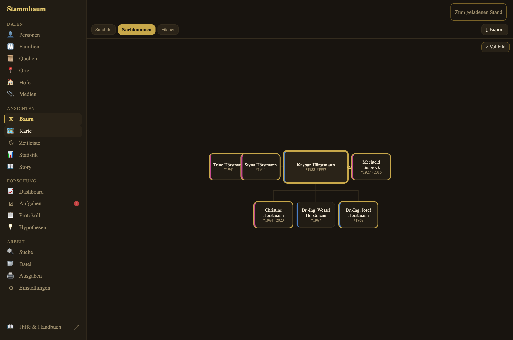
Fächer
Der Fächer zeigt die Vorfahren als konzentrische Halbkreis-Ringe (3 bis 8 Generationen): der Proband unten in der Mitte, die Vaterseite links, die Mutterseite rechts, jede Generation ein Ring weiter außen. Eine kompakte Übersicht über die gesamte Ahnenschaft auf einen Blick — blau für Männer, rosa für Frauen.
In den äußeren Ringen wird es eng: die Namen kürzen sich erst zu Initialen, dann auf den Nachnamen, und ab dem sechsten Ring bleibt gar keine Beschriftung mehr übrig — im achten Ring ist ein Segment nur noch gut sieben Bildpunkte breit. Zeigen Sie auf ein Segment (auf dem Tablet: kurz gedrückt halten), und ein Hinweisfeld nennt Namen, Geburtsjahr und Geburtsort — in derselben Form wie die Auswahllisten, und auch dort, wo nichts geschrieben steht.
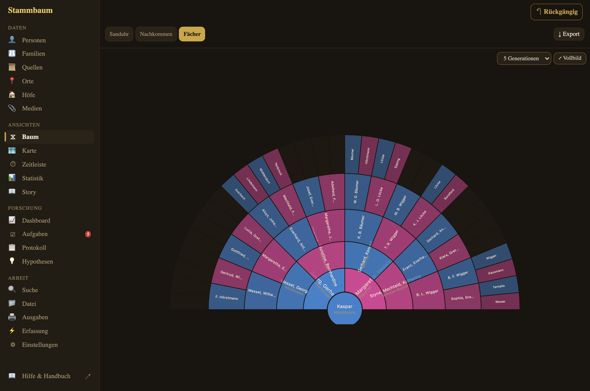
Vollständigkeits-Ringe
Karten mit fehlenden oder unbelegten Angaben tragen einen farbigen Ring: goldgelb für einen Hinweis, orange für eine Warnung, rot für einen Fehler. Die Stufung stammt aus derselben Prüfung wie das Qualitäts-Dashboard (Kapitel 16) — kein zweiter Maßstab. Fahren Sie mit der Maus über eine Karte, nennt ein Hinweisfeld die konkret fehlenden Angaben. So sehen Sie direkt im Baum, wo noch Arbeit wartet.
Als Bild oder Poster exportieren
Über ↓ Export (rechts in der Umschalt-Leiste) speichern Sie das gerade gezeigte Diagramm als PNG-Bild oder als A1-Poster (SVG) — Letzteres verlustfrei und in Druckgröße, etwa für die Wand. Der Export enthält alles, was Sie sehen: Namen, Jahre, Geschlechtsfarben und die Vollständigkeits-Ringe.
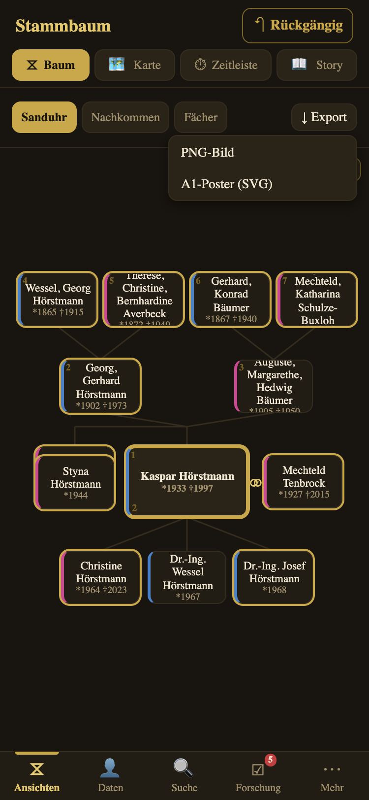
Die interaktive Karte
Die Karte hat drei Modi: Orte (alle Orte und Höfe mit Koordinaten — braune Kreise für Dörfer, blaue Rauten für Höfe), Personen (eine animierbare Lebens-/Wanderungslinie einer gewählten Person, mit Abspiel-Steuerung) und Migrationen.
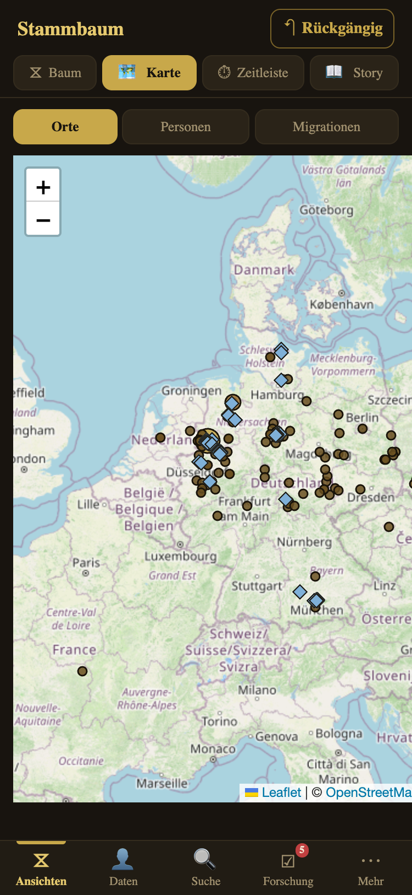
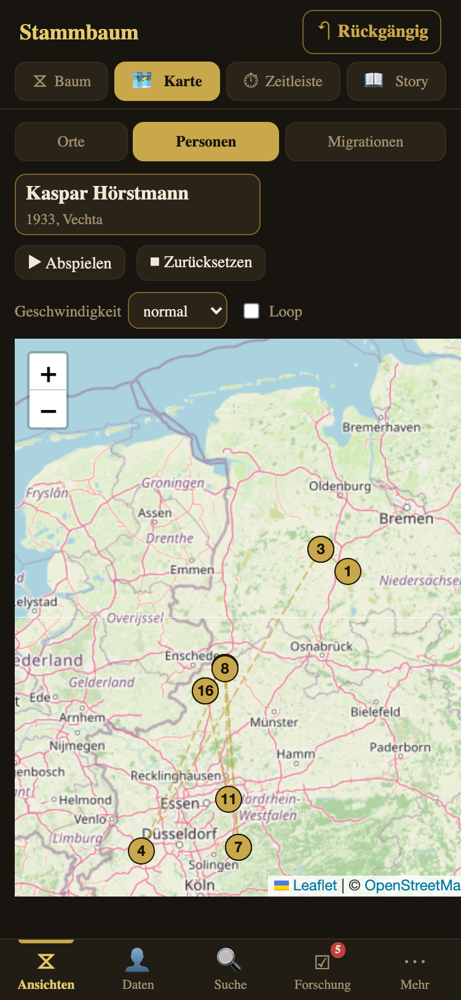
Im Modus Personen wählen Sie oben eine Person und lassen ihren Lebensweg mit ▶ Abspielen animieren — Station für Station, mit einstellbarer Geschwindigkeit und optionalem Loop. ■ Zurücksetzen stellt den Anfang wieder her.
Einen Marker antippen
Ein Tipp auf einen Marker öffnet unter der Karte ein Panel zu diesem Ort — bewusst unter statt über der Karte, damit der angetippte Marker sichtbar bleibt. Es listet, wer dort gelebt hat: bei einem Ort die Ortszeitgenossen, bei einem Hof dessen Bewohner und Eigentümer. Jede Zeile führt zur Person, und „→ Steckbrief" führt zum Ort selbst.
Den Weg in die Gegenrichtung gibt es auch: Die Mini-Karte im Ort- und Hof-Steckbrief ist selbst anklickbar und springt in die große Karte.
Die Zeitleiste
Die Zeitleiste stellt das Leben einer Person (oder mehrerer im Vergleich) in Bahnen dar: Leben, Wohnorte, Beruf, Familie, Sonstiges und ein Kontextband Geschichte. Über ⊕ Person hinzufügen wählen Sie, wen die Leiste zeigt; die geöffnete Person ist automatisch vorbelegt.
- Umschalter Swim-Lane / Dekaden.
- Das Kontextband Historische Ereignisse (Krieg, Seuche, Politik, Religion, Natur) lässt sich zuschalten und je Kategorie filtern — im Beispiel etwa „1933 NS-Machtübernahme" oder „1939 Zweiter Weltkrieg beginnt". So sehen Sie ein Leben vor seinem Zeithintergrund.
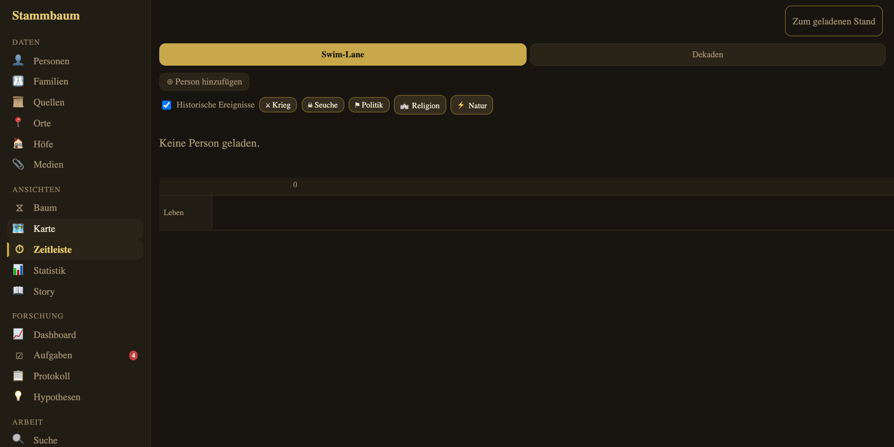
12. Statistik
Wie sieht der Bestand als Ganzes aus? Die Statistik zeigt Verteilungen — Geburtsjahrzehnte, Kinderzahl je Familie, Lebensalter, häufigste Nachnamen und Orte.
Jeder Balken beziffert sich selbst: Er nennt die absolute Zahl, und ein Antippen bzw. Zeigen blendet zusätzlich den Prozentanteil ein. Unter jeder Verteilung steht ihre Grundgesamtheit („N Familien gesamt") — ohne sie ist ein Anteil nicht lesbar, und genau daran scheitern die meisten Statistik-Ansichten.
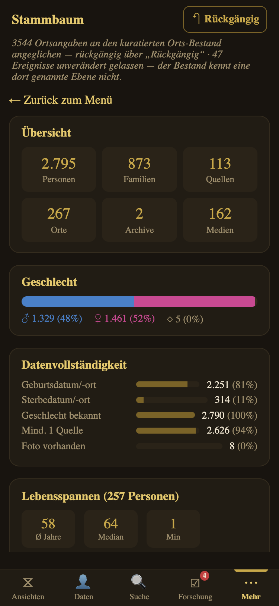
Mehr → Statistik wertet den ganzen Bestand aus:
- Übersicht — Anzahl Personen, Familien, Quellen, Orte, Archive, Medien.
- Geschlecht als Balken mit Prozenten.
- Datenvollständigkeit — Anteil mit Geburtsdatum/-ort, Sterbedatum, Quelle usw.
- Lebensspannen — Durchschnitt, Median, Minimum, Maximum.
Die Statistik rechnet über die aufgelösten Orte, nicht über rohe Textfelder — historische Schreibvarianten desselben Ortes zählen als einer. Ordnen Sie Ihre Orte also zuerst, dann stimmen auch die Zahlen.
13. Story: Erzählte Biografien
Die Story-Ansicht verwandelt die nüchternen Daten einer Person in eine zusammenhängende Lebensgeschichte — in ganzen deutschen Sätzen, mit Lebensweg-Karte, kompaktem Stammbaum-Ausschnitt und eingebetteten Fotos. Kein Rohdaten-Auszug, sondern ein lesbarer Text, den auch Verwandte ohne Genealogie-Vorwissen verstehen. Story ist eine der Ansichten und steht im Umschalter neben Baum · Karte · Zeitleiste · Statistik.
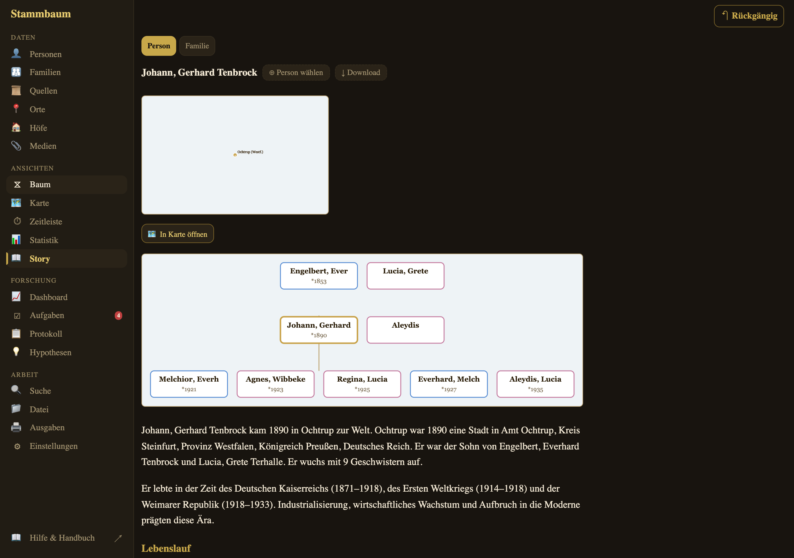
Zwei Modi: Person und Familie
Ein Umschalter oben wählt das Subjekt der Erzählung:
- Person — die Biografie eines Menschen: Herkunft und frühe Jahre, der Lebenslauf mit Beruf und Wohnorten, die eigenen Ehen und Kinder, schließlich Tod und Begräbnis.
- Familie — eine paarzentrische Erzählung: die Heirat, beide Elternhäuser, die gemeinsamen Kinder und die Familienchronik.
Wessen Geschichte erzählt wird, folgt dem Proband bzw. der geteilten Auswahl der Ansichten — über ⊕ Person wählen ändern Sie sie jederzeit. Aus dem Personen- oder Familien-Detail führt das Symbol 📖 direkt in die passende Story.
Mehr als Fließtext
- Erzählung aus der Datenlage. Gleichartige Ereignisse werden zu einem Fluss-Satz zusammengefasst (mehrere Berufe, mehrere Wohnorte), Anreden und Formen sind geschlechtsgerecht.
- Zeit- und Ortskontext. Die Lebensspanne wird gegen historische Epochen des deutschsprachigen Raums gelegt; zu Geburt, Taufe, Tod und Begräbnis treten kurze Ortssätze mit der Zugehörigkeit zum jeweiligen Ereignisjahr.
- Lebensweg-Karte. Die Stationen als Linie — live interaktiv, im Download als eingebettetes Bild und damit offlinetauglich, ganz ohne Kartendienst.
- Inline-Diagramm. Ein kompakter Stammbaum-Ausschnitt; ein Klick auf eine Karte rückt diese Person in den Mittelpunkt der Erzählung.
- Fotos eingebettet aus den Medien.
14. Ausgaben: Druckfertige Reports
Unter Mehr → Ausgaben erzeugt Stammbaum eine Reihe druckfertiger Dokumente aus Ihren Daten — von der Ahnenliste bis zum buchreifen Familienbuch. Jedes entsteht als eigenständige HTML-Seite in einem neuen Tab; drucken oder als PDF sichern übernimmt der Browser. Kein Server, keine externe Bibliothek — und weil jeder Report aus dem Datenmodell gerechnet wird und nicht aus dem Bildschirminhalt, ist er unabhängig davon, was gerade angezeigt wird.
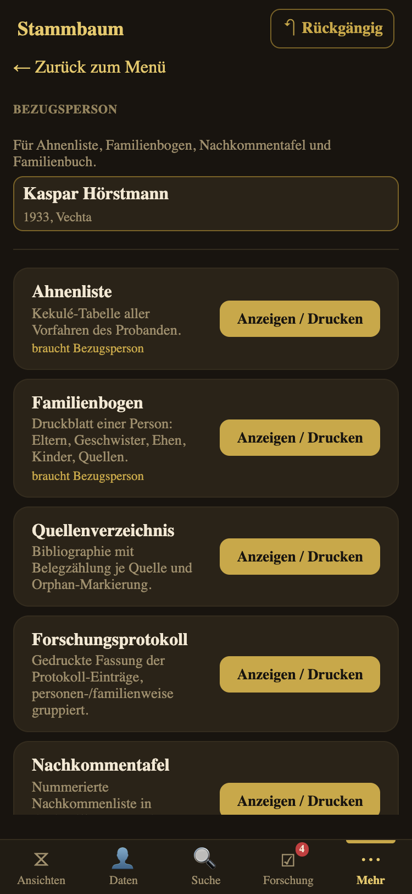
Personenbezogene Reports (Ahnenliste, Familienbogen, Nachkommentafel, Familienbuch) brauchen eine Bezugsperson. Sie ist mit dem Proband vorbelegt und über den Personen-Picker änderbar; die übrigen werten den ganzen Bestand aus.
Die verfügbaren Ausgaben
- Ahnenliste — die Vorfahren des Probanden als Kekulé-Tabelle.
- Familienbogen — ein Druckblatt zu einer Person: Eltern, Geschwister, Ehen, Kinder und Quellen.
- Nachkommentafel — die Nachfahren in d’Aboville-Nummerierung.
- Familienbuch — die buchreife Ausgabe mit Coverfoto, Inhaltsverzeichnis, Ahnen-Sektionen, Glossar und Namenindex.
- Quellenverzeichnis — eine Bibliographie mit Belegzählung je Quelle; unbenutzte Quellen sind eigens markiert.
- Forschungsprotokoll — die gedruckte Fassung Ihrer Protokoll-Einträge, personen- und familienweise gruppiert.
- Ortssippenbuch — Familien nach Ort gruppiert, je Familie ein erzählender Kurztext.
- Hofchronik — Ort › Hof › Eigentümer und Bewohner mit Zu- und Wegzug.
- Ortsbuch — ein ortssortiertes Nachschlagewerk: Namensvarianten, Verwaltungszugehörigkeit und alle dort verzeichneten Ereignisse samt Personen.
15. Forschung: Aufgaben, Protokoll, Hypothesen
Die Forschung ist Ihr Arbeitsplatz für die laufende Recherche und besteht aus vier Bereichen: Dashboard (Kapitel 16), Aufgaben, Protokoll und Hypothesen. Jeder Eintrag hängt an einer Person oder Familie.
Auf dem Computer bildet die Forschung eine eigene, beschriftete Seitenleisten-Gruppe „Forschung"; auf dem Handy erreichen Sie sie über Forschung in der unteren Leiste, mit dem Dashboard an erster Stelle der Segmentreihe.
Anlegen können Sie einen Eintrag auch dort, wo er entsteht: Der Abschnitt Forschung am Personen- und Familien-Steckbrief nimmt Aufgabe, Protokolleintrag und Hypothese direkt auf — dieselben Einträge, dieselben Formulare, nur ohne den Umweg, die Person hier erst wieder herauszusuchen. Die drei Bereiche dieses Kapitels bleiben der Ort, an dem Sie über den ganzen Bestand hinweg arbeiten: sortieren, filtern, abhaken.
app-data.json mit
(Kapitel 18).
Aufgaben und Kanban-Board
Aufgaben sind offene To-dos Ihrer Recherche. Sie lassen sich als Liste oder als Board anzeigen — das Board ordnet sie nach Bearbeitungsstatus (Offen, In Arbeit …). Mit „→ In Arbeit" verschieben Sie eine Karte. Jede Karte nennt die zugehörige Person.
+ Aufgabe legt eine neue an (Text, Kategorie, Ziel-Person, optional eine Quelle). Ein Filter grenzt die Ansicht ein.
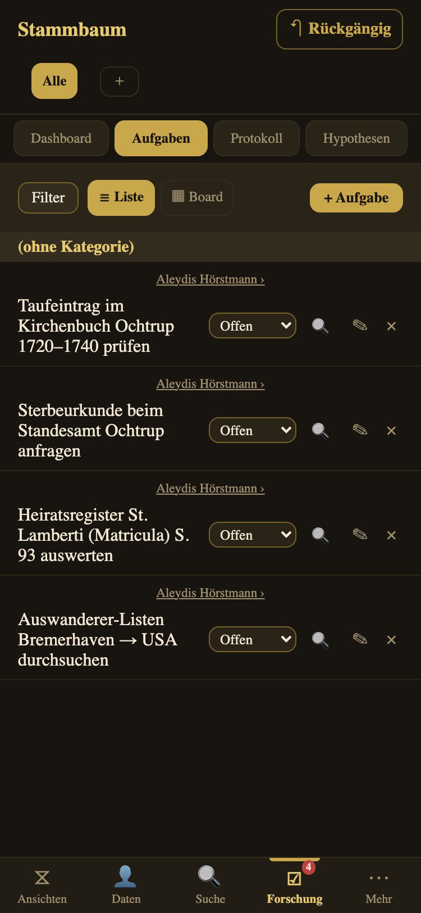
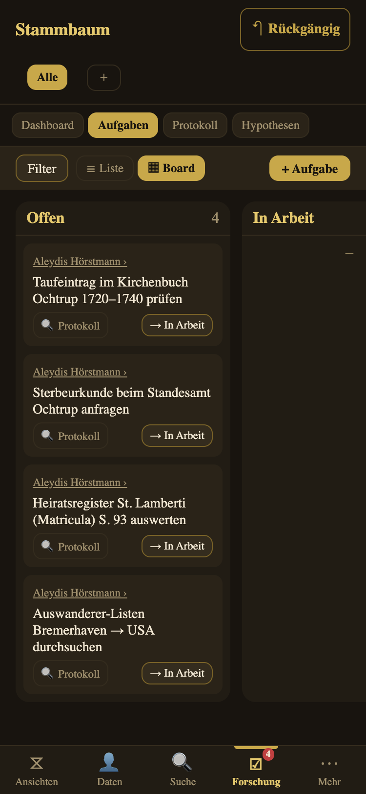
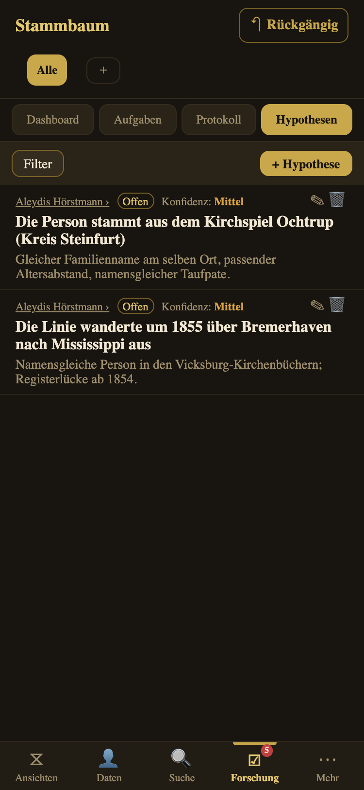
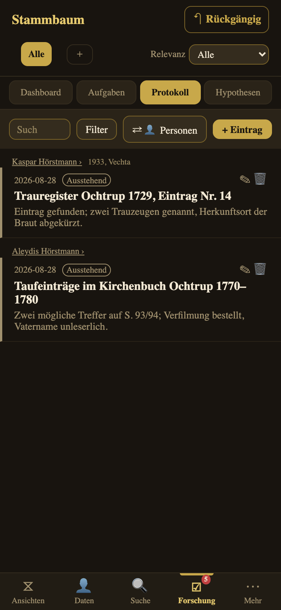
Hypothesen
Eine Hypothese hält eine Annahme fest — mit Status (Offen / Bestätigt / Verworfen), einer eigenen Konfidenz (bewusst getrennt von der Quellen-Beweiskraft) und einer Beweisführung. Belege werden als Quellen-Referenzen angehängt.
Forschungsprotokoll
Das Protokoll dokumentiert jeden Rechercheschritt: Datum, Archiv, Quelle, Suchanfrage, Ergebnis und Notiz. Das Ergebnis kennt vier Werte — gefunden, teilweise (Fund, aber unvollständig — trägt die Wiedervorlage), nichts gefunden und ausstehend. So bleibt nachvollziehbar, wo Sie schon gesucht haben.
Ein Umschalter wechselt zwischen der personenweisen Gruppierung und einer chronologischen Timeline (neueste zuerst) — dieselben Einträge, eine andere Sicht. Und aus einer Aufgabe heraus legt die Schaltfläche 🔍 Protokoll einen vorbefüllten, mit der Aufgabe verknüpften Protokolleintrag an; die Protokollzeile zeigt die auslösende Aufgabe als Rückverweis.
Forschen mit Plan — der Kreislauf
Aufgaben, Protokoll und Hypothesen sind kein Selbstzweck, sondern bilden zusammen einen nachvollziehbaren Forschungsprozess:
- Frage als Aufgabe festhalten („Taufeintrag von X finden").
- Suchen — jeden Schritt (auch erfolglose!) im Protokoll vermerken: Archiv, Quelle, Suchanfrage, Ergebnis.
- Schlussfolgern — eine Hypothese formulieren, mit Belegen und einer ehrlichen Konfidenz.
- Bestätigen oder verwerfen — die Hypothese auf Grundlage der Belege abschließen und die gesicherte Tatsache in die Daten übernehmen.
16. Qualität und Datenprüfung
Das Dashboard (Aufgaben → Dashboard) fasst die Datengüte zusammen und stützt sich auf eine Regel-Engine, die den ganzen Bestand prüft.
- Ein Gesamtwert „% befundfrei" und Zähler für Fehler, Warnungen, Hinweise und saubere Personen.
- Der Lückenradar zeigt Abdeckungsgrade (Geburtsdatum, Geburtsort, Quelle mit Bewertung …).
- Brennpunkte listen konkrete Auffälligkeiten je Person — etwa „zu jung bei Geburt" oder ein unplausibles Heiratsalter.
- Der Ast-Reifegrad bricht dieselben Zahlen nach Vorfahren-Ästen auf: je Ast (Großeltern-Linie und tiefer) sehen Sie, wie weit er erforscht und wie gut er belegt ist. Ein Antippen scopt das ganze Dashboard auf diesen Ast — so arbeiten Sie eine Linie ab, statt im Gesamtbestand zu suchen.
Über Filter, ✓ Bericht und das Zahnrad steuern Sie Umfang und Regel-Konfiguration.
Auch die Orte werden geprüft
Eine eigene Regelklasse nimmt sich die Geografie vor — erreichbar über die Kachel „🗺 Orte & Höfe" im Dashboard: Koordinaten außerhalb des erwarteten Gebiets, Höfe ohne Koordinate oder unplausibel weit von ihrem Dorf entfernt, ringförmige Zugehörigkeitsketten (A liegt in B liegt in A) und Zeiträume historischer Ortsnamen, die sich überlappen oder ohne Datum dastehen.
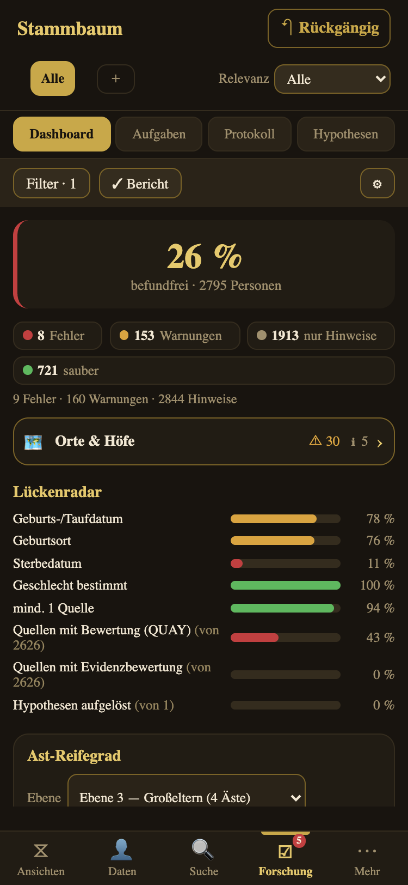
app-data.json mit
(Kapitel 18), zusammen mit der Export-Vorwahl und Ihren
Forschungsprojekten.
So arbeiten Sie Befunde ab
- Mit den roten Fehlern beginnen — sie deuten auf echte Widersprüche (etwa ein Kind, das nach dem Tod des Vaters geboren wurde).
- Jeden Brennpunkt antippen, die Person öffnen und den Widerspruch entweder korrigieren oder mit einer Quelle erklären.
- Auf widersprüchliche Belege achten: Wo zwei Quellen dieselbe Angabe unterschiedlich bezeugen, meldet die Regel Evidenz-Widerspruch das — das ist kein Datenfehler, sondern die Stelle, an der eine Entscheidung ansteht (welcher Quelle folgen Sie, und warum?).
- Über den Lückenradar gezielt Lücken schließen (fehlende Geburtsorte, unbelegte Angaben).
- Den Fortschritt am Wert „% befundfrei" und an den Zählern verfolgen.
17. Suchen und Finden
Die Suche (untere Leiste) durchsucht alle fünf Datenarten gleichzeitig — Personen, Familien, Quellen, Orte und Höfe — und zeigt die Treffer schon ab zwei Zeichen, nach Datenart gruppiert. Ein Tippen führt direkt zum Eintrag. Im Beispiel filtert „Ochtr" bereits alle in Ochtrup geborenen Personen heraus. Innerhalb einer Liste filtert zusätzlich das jeweilige lokale Suchfeld sofort mit.
≈ Soundex — ähnlich klingende Namen
Der Schalter ≈ Soundex neben dem Suchfeld weitet die Personensuche auf gleich klingende Namen aus: Meyer findet dann auch Maier, Mayer und Meier. Das ist keine Bequemlichkeit, sondern der Normalfall älterer Quellen — vor der Rechtschreibnormierung schrieb jeder Pfarrer denselben Namen, wie er ihn hörte. Ausgeschaltet sucht die App wieder buchstabengetreu.
Treffer auf eine Datenart eingrenzen
Über den Ergebnissen steht eine Chip-Reihe „Alle · Personen · Familien · Quellen · Orte · Höfe", jeder Chip mit seiner Trefferzahl. Ein Tipp beschränkt die Ausgabe auf diese Datenart. Die Chips erscheinen nur, wenn eine Anfrage überhaupt mehrere Arten trifft — bei einem eindeutigen Namen bleibt die Fläche ruhig.
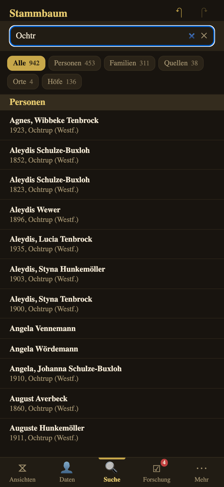
18. Speichern und Sichern
Wohin „Speichern“ schreibt
Stammbaum nutzt ein Export-Rohr. Wohin es schreibt, entscheidet sich danach, was Ihr Gerät anbietet — in dieser Reihenfolge:
- Zurück in dieselbe Datei, still und ohne Rückfrage. Das ist der Normalfall, sobald die App Ihre Datei einmal kennt.
- Ein „Speichern unter“-Dialog, wenn sie sie noch nicht kennt — etwa nach einem Neustart des Browsers. Sie wählen die Datei einmal aus; ab dann speichert Stammbaum wieder still dorthin zurück.
- Das Teilen-Menü auf iPhone und iPad, wo „In Dateien sichern“ der übliche Weg ist.
- Ein Download, wenn der Browser nichts davon kann — die Datei landet dann in Ihrem Download-Ordner.
In allen Fällen entsteht dieselbe, formattreue Ausgabe. Bricht der Dialog ab, ist nichts geschrieben und nichts verloren — Ihr Stand liegt weiter in der Arbeitskopie.
Was ein Speichern an Ihrer Datei ändert — und was nicht
Die kürzeste Antwort: genau das, was Sie geändert haben. Ein Öffnen und sofortiges Speichern ohne einen einzigen Eingriff gibt Ihnen dieselbe Datei zurück — keine verlorene Zeile, kein umgeschriebener Wert, keine hinzuerfundene Angabe.
Das ist keine Selbstverständlichkeit, sondern das Ergebnis harter Arbeit an genau dieser Stelle. Frühere Fassungen taten, was viele Programme tun: Sie „räumten auf". Gemessen an einer echten Datei mit gut 3.000 Personen hieß das pro Speichervorgang
- 668 Ortstexte auf die aus dem Ortsbestand berechnete Fassung umgeschrieben,
- rund 200 Namensteile ergänzt, die die Quelldatei nie enthielt (weil sich Vor- und Nachname aus dem Namen ja ableiten lassen),
- Formatangaben von Medien vereinheitlicht
(
JPEG→jpg), - zeitweise mehrere hundert Zeilen gar nicht wieder ausgegeben — Quellenverweise, Beweiskraft-Angaben, Adressen, Notizen.
Jeder dieser Punkte ist einzeln gemessen, behoben und mit einem automatischen Wächter gegen Rückfall gesichert. Der Grundsatz dahinter lautet: Der Wert in Ihrer Datei ist die Wahrheit, bis jemand ihn anfasst. Solange Sie ein Feld nicht bearbeiten, geht der Wortlaut Ihrer Quelle wieder heraus — auch dann, wenn die App ihn selbst anders schreiben würde. Ändern Sie das Feld, tritt Ihre Fassung an seine Stelle.
Arbeitskopie und Auto-Load
Ihr aktueller Stand wird als Arbeitskopie im Gerät gehalten und beim nächsten Start automatisch geladen. Sie verlieren also nichts, wenn Sie den Tab schließen.
Die Einstellungen
Mehr → Einstellungen ist bewusst keine Sammelkiste, sondern beantwortet bei jeder Gruppe zuerst die Frage, die im Alltag wirklich zählt: Gilt das überall oder nur hier?
- Medien-Ordner — nur auf diesem Gerät, reist nicht mit. Die Freigabe eines Ordners kann ein Browser naturgemäß nicht auf ein anderes Gerät übertragen; mitgenommen wird nur sein Name, damit Sie am zweiten Gerät wissen, wonach Sie suchen (siehe Kapitel 10).
- Wird woanders bedient — ein ehrlicher Verweis statt einer zweiten Bedienstelle: Die Prüfregeln stehen im Dashboard neben ihren Befunden, die Export-Vorwahl im Export-Dialog. Ein Link führt jeweils dorthin. Eine Einstellung zweimal bedienbar zu machen, schafft nur die Frage, welche der beiden gilt.
- Mitnehmen (
app-data.json) — gilt für alle Stammbäume und reist mit: Export und Import dieser kleinen Datei, die keine Personendaten enthält (gleich unten mehr).
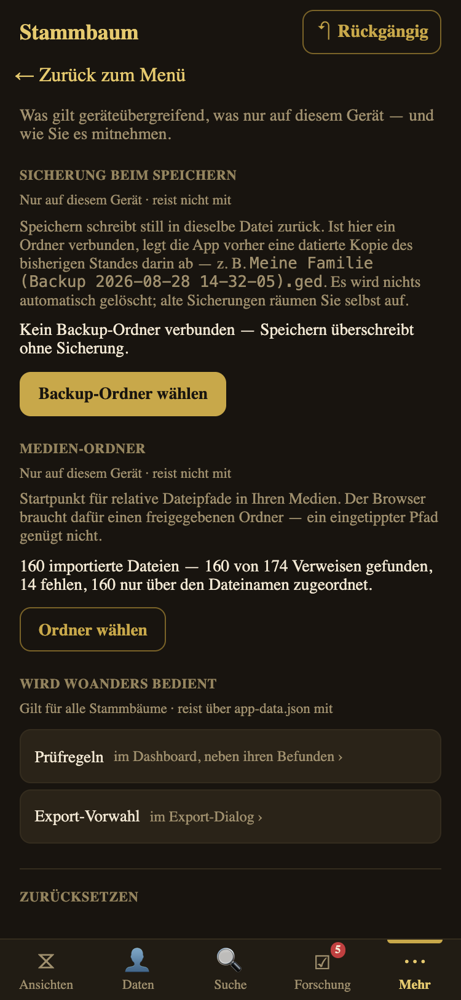
Einstellungen auf ein zweites Gerät mitnehmen
Manches gehört nicht in die Genealogie-Datei, soll aber trotzdem nicht an einem Gerät
kleben: die Regel-Konfiguration der Datenprüfung, die
Export-Vorwahl und Ihre Forschungsprojekte. Diese
App-Einstellungen liegen in einer eigenen kleinen Datei app-data.json,
die Sie — genau wie die orte.json — bewusst exportieren
und auf dem anderen Gerät importieren; die Knöpfe dafür stehen unter
Mehr → Einstellungen. Ihre GEDCOM-/GRAMPS-Datei bleibt davon
unberührt.
Beim Import wird zusammengeführt, nicht überschrieben: Was nur auf einer Seite geändert wurde, wird übernommen; wo beide Geräte dieselbe Einstellung verschieden gesetzt haben, gewinnt die lokale Fassung und die App sagt es Ihnen. Projekte beider Geräte bleiben nebeneinander erhalten — zwei neue Projekte sind kein Konflikt.
Rückgängig und „Zum geladenen Stand"
- Undo/Redo nimmt einzelne Änderungen schrittweise zurück (Snapshot-Verlauf).
- Zum geladenen Stand verwirft alle Änderungen seit dem letzten Laden/Speichern.
19. Datenformate und Import/Export
Welche Formate?
- GEDCOM 5.5.1 — öffnen und schreiben (Standardformat).
- GEDCOM „Strict" und GEDCOM 7.0 — als Export-Formate im selben Export-Rohr (die Formatwahl bestimmt Serialisierer und Dateiendung).
- GRAMPS — lesen und schreiben; Änderungen (Namen, Geschlecht, Quellen, Ereignisse …) werden zurückgeschrieben.
In anderes Format exportieren
Über Datei → In anderes Format exportieren wählen Sie das Zielformat (5.5.1 / Strict / GED7) und optional eine Anonymisierung — mit Zähler, wie viele von wie vielen Personen betroffen sind. So geben Sie einen Auszug weiter, ohne lebende Personen preiszugeben.
Datenerhalt (Roundtrip)
Das Kernversprechen: Was hineingeht, kommt unverfälscht wieder heraus. Felder, die die App nicht selbst bearbeitet, werden unverändert durchgereicht — Ihre Datei verliert beim Öffnen und Speichern nichts. Und was sie bearbeitet, behält seinen Wortlaut, solange Sie es nicht anfassen: Ein Speichern ohne Ihr Zutun schreibt keinen Wert um. Wie das sichergestellt wird, steht in Anhang B; was es im Alltag bedeutet, in Kapitel 18.
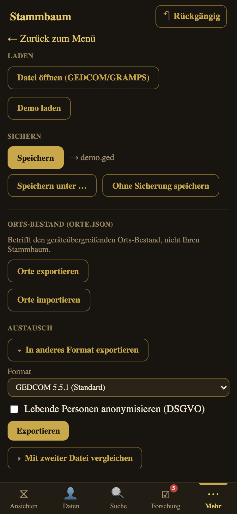
Dateien vergleichen
Datei → Mit zweiter Datei vergleichen stellt einen zweiten Bestand gegenüber: Die App klassifiziert Personen (sichere / mögliche / unsichere Entsprechung) und zeigt je Feld Ergänzungen, Konflikte und Identisches — Sie entscheiden feldweise, was übernommen wird.
20. Was noch folgt
Ehrlichkeitshalber: Die folgenden Bereiche sind geplant und in der App teils schon als „(folgt)" sichtbar, aber noch nicht nutzbar. Sie sind hier aufgeführt, damit Sie wissen, was heute fehlt.
- Historische Kartenebenen (z. B. Messtischblätter als Hintergrund, eigene Kachel-Adresse) — die Karte nutzt heute eine feste Grundkarte.
Die frei konfigurierbaren Eingabe-Vorlagen, die hier lange standen, sind inzwischen gebaut und haben ein eigenes Kapitel bekommen: Erfassung.
21. Gute Praxis auf einen Blick
- Belegen vor Behaupten. Jede Tatsache verdient eine Quelle. Eine unbelegte Angabe ist eine Hypothese, keine Tatsache.
- Orte verknüpfen, nicht tippen. Erst als Ortsobjekt entfaltet ein Ort seinen Wert (Karte, Statistik, Zeitgenossen).
- Unschärfe zulassen.
um 1750ist ehrlicher als ein erfundenes exaktes Datum. - Drei Ebenen trennen: Quelle (Beweiskraft) — Tatsache (Ereignis) — Schlussfolgerung (Hypothese).
- Auch Erfolgloses protokollieren. Wo Sie schon gesucht haben, ist wertvolles Wissen.
- Serien mit einer Vorlage erfassen. Wer ein Kirchenbuch durcharbeitet, baut sich einmal eine Erfassungs-Vorlage dafür — das spart nicht nur Tipparbeit, es hängt die Fundstelle an jede einzelne Angabe, statt sie später nachzutragen.
- Regelmäßig sichern. Die App speichert nicht von selbst in Ihre Datei — schreiben Sie bewusst zurück.
- Datenpflege ist laufend. Orte aufräumen und das Dashboard prüfen gehören zur Routine, nicht ans Projektende.
22. Häufige Fragen
- Wo sind meine Daten gespeichert? Sind sie sicher?
- Ausschließlich auf Ihrem Gerät. Es gibt keinen Server und kein Konto; nichts wird hochgeladen. Sichern Sie zusätzlich, indem Sie die Datei regelmäßig exportieren.
- Muss ich speichern?
- Ihr Zwischenstand bleibt automatisch als Arbeitskopie erhalten und wird beim Neustart geladen. In Ihre Datei schreiben Sie aber bewusst über das Datei-Menü zurück (siehe Kapitel 18).
- Ich habe aus Versehen etwas geändert — was nun?
- Nutzen Sie ↶ Rückgängig oder verwerfen Sie alle Änderungen seit dem Laden mit Zum geladenen Stand.
- Meine Fotos werden nicht angezeigt.
- Eine Genealogie-Datei enthält nur Pfade, keine Bilder. Geben Sie unter Mehr → Einstellungen → Medien-Ordner einmalig den Ordner frei, in dem Ihre Scans liegen — auf iPhone/iPad stattdessen Medien importieren. Danach sagt Ihnen jede Kachel, woran sie ist (Kapitel 10).
- Die Karte bleibt leer.
- Es fehlen Koordinaten. Importieren Sie zuerst einen Orts-Bestand (Kapitel 8); erst dann erscheinen Marker.
- Kann ich die App ohne Internet nutzen?
- Ja. Einmal geladen, funktioniert sie offline; eine Anzeige signalisiert den Offline-Zustand.
- Was ist der Unterschied zwischen einem Ort und einem Hof?
- Ein Ort ist ein Dorf/eine Gemeinde; ein Hof ist eine Adresse innerhalb eines Ortes (Straße, Hausnummer). Siehe Kapitel 9.
- Gehen beim Öffnen und Speichern Daten verloren?
- Nein — und es wird auch nichts stillschweigend umgeschrieben. Ein Öffnen und sofortiges Speichern gibt an einer echten Datei mit gut 3.000 Personen nachweislich null veränderte Zeilen zurück. Felder, die die App gar nicht bearbeitet, werden unverändert durchgereicht; Felder, die sie bearbeitet, behalten den Wortlaut Ihrer Quelle, bis Sie sie ändern (siehe Kapitel 18 und Anhang B).
- Warum steht die Konfession bei den Ereignissen und nicht bei den Stammdaten?
- Weil sie Datum, Ort und Quelle haben kann — ein Übertritt ist ein Ereignis im Leben, keine Eigenschaft. Als Textfeld wäre genau das verloren (Kapitel 4).
- Ich habe versehentlich „Neue Person" getippt. Bleibt jetzt ein leerer Eintrag?
- Nein. Verlassen Sie die Anlage, ohne etwas einzutragen, wird sie wieder entfernt (Kapitel 4).
- Ich bin über viele Details gewandert und finde nicht zur Liste zurück.
- Tippen Sie auf das bereits aktive Segment — etwa auf Personen, während eine Person offen ist. Das legt die Auswahl ab und zeigt wieder die Liste (Kapitel 3).
- Wie gebe ich einen Auszug weiter, ohne Lebende preiszugeben?
- Beim Export die Anonymisierung aktivieren (Kapitel 19).
23. Umstieg von anderen Programmen
Stammbaum liest die verbreiteten Austauschformate. Der beste Weg aus einem anderen Programm ist daher der Export als GEDCOM 5.5.1 — oder, aus GRAMPS, die native GRAMPS-Datei.
- Im Ausgangsprogramm als GEDCOM 5.5.1 (oder GRAMPS-Datei) exportieren.
- In Stammbaum über Mehr → Datei → Datei öffnen einlesen.
- Die Orte ordnen (Kapitel 8) und mit dem Dashboard die Datenlage prüfen.
24. Checkliste für einen guten Start
- Datei geladen und einmal probehalber zurückgeschrieben (der Speicherweg funktioniert).
- Orts-Bestand importiert, Dubletten zusammengeführt, Text-Orte verknüpft.
- Dashboard angesehen — die größten Lücken und Fehler sind bekannt.
- Für die wichtigsten Personen sind die Kernquellen erfasst und bewertet.
- Offene Fragen als Aufgaben notiert.
- Ein Sicherungsexport liegt an einem zweiten Ort.
Anhang A: Symbole und Tastaturkürzel
Symbole in Listen und Detailansichten
| Symbol | Bedeutung |
|---|---|
| ◎ | Für dieses Ereignis liegen Koordinaten vor. |
| ↗ | Auf der Karte anzeigen. |
| Quellen-Marke | Verknüpfte Quelle — zeigt deren Kurznamen (nur bei namenloser Quelle die interne Nummer §N); der kleine Punkte-Balken daneben ist die Beweiskraft (0–3 gefüllte Punkte). |
| QUAY 3 | Beweiskraft eines Quellenbezugs (0–3), als Punkte-Balken (so viele gefüllte Punkte wie die Stufe). |
| ✎ | Bearbeiten. |
| 🗑 | Diesen Eintrag entfernen — immer mit Rückfrage, immer als äußerstes Zeichen der Zeile. |
| ⧉ | Kopieren: eine Zitation oder ein Ereignis in die Sitzungs-Ablage legen (Kapitel 6) bzw. eine Erfassungs-Vorlage vervielfältigen (Kapitel 7). |
| 📋 Übernehmen | Das Gegenstück: das Abgelegte hier einfügen. Erscheint nur, solange die Ablage gefüllt ist. |
| ⧖ | Im Baum anzeigen. |
| ↶ / ↷ | Rückgängig / Wiederholen (Änderungen an den Daten — nicht zu verwechseln mit „← Zurück", das in der Ansicht zurückführt). |
| braune Kreise / blaue Rauten | Auf der Karte: Dörfer bzw. Höfe. |
| ✓ Geprüft Datum | Ort oder Hof wurde von Hand angesehen und für richtig befunden (Kapitel 8). Wird nie automatisch gesetzt. |
| 📎 | An diesem Eintrag hängen Medien (Personen- und Quellenliste). Dasselbe Zeichen trägt das Segment Medien. |
| 📄 | Medium: gefundene Datei, die kein Bild ist (z. B. PDF). |
| ≈ | Medium nur über den Dateinamen zugeordnet — der Ordner im Verweis weicht ab. |
| ⚠ (an einer Medien-Kachel) | Der Medien-Ordner ist verbunden, diese Datei liegt aber nicht darin. |
Untere Navigation (Handy)
| Tab | Führt zu |
|---|---|
| ⧖ Ansichten | Grafische Ansichten (Baum, Karte, Zeitleiste). |
| 👤 Daten | Datenarten (Personen, Familien, Quellen, Orte, Höfe, Medien). |
| 🔍 Suche | Globale Suche über alle Datenarten. |
| ☑ Forschung | Forschung: Aufgaben, Protokoll, Hypothesen, Dashboard. |
| ⋯ Mehr | Karte, Zeitleiste, Datei-Menü, ⚡ Erfassung, Statistik, Story, Ausgaben, Einstellungen. |
Tastaturkürzel (Computer)
| Kürzel | Wirkung |
|---|---|
| ⌘K / Strg+K | Befehlspalette öffnen. |
| ⌘S / Strg+S | Speichern. |
| Eingabetaste | In jedem Formular: speichern (Person, Quelle, Archiv, Ort, Hof, Medium, Aufgabe, Protokoll, Hypothese). Liegen zwei Formulare ineinander, gilt sie dem inneren. |
| Esc | Dialog/Panel schließen — und in einem Formular das, was dessen zweiter Knopf tut: Feldwerte verwerfen bzw. den eingeblendeten Entwurf schließen. |
| Tab / Shift+Tab | In einem offenen Dialog nur innerhalb des Dialogs; beim Schließen kehrt der Fokus zum auslösenden Knopf zurück. |
| Alt+← / Alt+→ | Im Verlauf zurück bzw. vorwärts (am Handy: nach rechts bzw. links wischen). |
Gesten und Kniffe
| Handlung | Wirkung |
|---|---|
| Tipp auf das aktive Segment | Legt die Auswahl ab und zeigt wieder die Liste (aus jeder Detailtiefe in einem Schritt). |
| Wischen nach rechts / links | Im Verlauf zurück bzw. vorwärts. In einem offenen Formular oder Dialog bewusst abgeschaltet. |
| Tipp neben ein offenes Auswahlfeld | Schließt es, ohne etwas zu wählen (ebenso das ✕ daneben und Esc). |
Anhang B: Das GEDCOM-Dateiformat
GEDCOM ist das seit Jahrzehnten verbreitete Austauschformat für
genealogische Daten. Es ist eine reine Textdatei aus nummerierten Zeilen
(0 @I1@ INDI, 1 NAME …). Stammbaum liest und schreibt es
nativ.
Datenerhalt (Roundtrip & Passthrough)
Das zentrale Versprechen: Was hineingeht, kommt unverfälscht wieder heraus. Intern bewahrt Stammbaum den vollständigen Zeilenbaum der Datei. Felder, die die App selbst bearbeitet, werden aus dem Modell geschrieben; alle übrigen — auch fremde oder seltene Tags — werden als Passthrough unverändert durchgereicht. Ein erneutes Speichern ohne Änderung erzeugt bit-gleiche Ausgabe; es geht nichts verloren.
CONC/CONT).
Eine Hofgeschichte in einem echten Bestand endete deshalb eine Zeitlang nach dem ersten
Bruchstück: 242 statt 360 Zeichen, und beim Zurückschreiben fehlte der Rest. Behoben —
und, wichtiger, die Lücke im Prüfnetz gleich mit: Der Verlust-Zensus verglich bis dahin
nur Zeilenlängen und lief an kleinen Testdateien. Jetzt vergleicht ein Wächter
die Textfragmente aller Datensätze des vollen Bestands. Wenn Sie nach einem
Speichern einen abgeschnittenen Text bemerken, melden Sie ihn: Solche Fälle sind
behebbar, aber nur, wenn jemand hinsieht.
Die Überlappungszone — wo Datenverlust wirklich entsteht
Der Passthrough kann per Konstruktion nur retten, was das Datenmodell nicht beansprucht — sonst käme jeder von Ihnen gelöschte Wert bei jedem Speichern zurück. Die eigentliche Gefahrenzone liegt genau dazwischen: bei Angaben, die das Modell für sich beansprucht, aber nicht in voller Feinheit halten kann. Ein Beispiel: Das Modell kennt „Beweiskraft 0", die Datei aber unterscheidet zwischen „ausdrücklich als unzuverlässig bewertet" und „nie bewertet" — schreibt die App den internen Vorgabewert nicht mit, verschwindet eine Aussage.
Stammbaum schließt diese Zone mit zwei Werkzeugen, die keinen einzigen Tag namentlich kennen und deshalb auch für künftige Felder wirken:
- Die Überschuss-Probe. Vor jeder Ausgabe wird der Schreibvorgang zusätzlich auf das unveränderte Original angewandt. Entstehen dabei weniger Zeilen als das Original trägt, liegt das am Modell und nicht an Ihnen — die fehlenden werden aus dem Original ergänzt. Haben Sie etwas gelöscht, gibt es keinen Überschuss und der Wert bleibt weg.
- Gesehen-oder-nicht. Wo die Abwesenheit einer Angabe mit einem Vorgabewert zusammenfällt (Beweiskraft 0, unbekanntes Geschlecht, Namensbestandteile), merkt sich die App zusätzlich, ob die Datei die Zeile hatte. Geschrieben wird nur, was da war oder was Sie gesetzt haben.
Dazu kommt die Formtreue der Ausgabe: Lange Texte werden nach der Regel des Standards
wieder auf Zeilen unter 255 Zeichen umgebrochen (CONC), statt als
überlange Zeile ausgegeben zu werden, an der ältere Programme scheitern. Gemessen an
einem echten Bestand mit gut 3.000 Personen: 0 verlorene Zeilen,
0 umgeschriebene Werte, 0 erfundene Zeilen, 0 zu lange Zeilen.
Welche Ereignisarten die App als Ereignis führt
Neben den Lebensdaten (Geburt, Taufe, Tod, Bestattung) und den Familien-Ereignissen
(Verlobung, Heirat, Scheidung) liest und schreibt Stammbaum die übrigen
Standard-Ereignisse als vollwertige Zeilen mit Datum, Ort und Quellen — darunter Beruf,
Wohnsitz, Ausbildung, Aus- und Einwanderung, Einbürgerung, Volkszählung, Besitz,
Militärdienst, Konfirmation, Religion, Priester-/Ordensweihe (ORDN),
Bar/Bat Mitzwa, Segnung, Glaubenstaufe, Feuerbestattung, Erstkommunion,
Testamentseröffnung, Testament und Ruhestand.
Taufe ist nicht gleich Taufe. GEDCOM unterscheidet die
Kindstaufe (CHR) — der Regelfall im Kirchenbuch und das, was die
App schlicht Taufe nennt — von der Glaubens- oder Erwachsenentaufe
(BAPM), die hier Glaubenstaufe heißt. Beide trugen eine
Weile dieselbe Beschriftung und standen im Menü „＋ Ereignis" zweimal gleichlautend
nebeneinander; wer den falschen Eintrag griff, schrieb einen anderen Tag in die Datei,
als er meinte. Ein automatischer Wächter stellt jetzt sicher, dass keine zwei
Ereignisarten denselben Namen tragen.
CHAN — wann ein Datensatz zuletzt geändert wurde
GEDCOM sieht je Datensatz einen Änderungsstempel vor. Stammbaum liest ihn bei allen Datensatzarten (Person, Familie, Quelle, Archiv, Medium) und pflegt ihn: Wer einen Datensatz ändert, bekommt beim nächsten Speichern das aktuelle Datum samt Uhrzeit eingetragen — und nur dieser Datensatz, nicht die ganze Datei. Unberührte Datensätze behalten den Stempel, den Ihr voriges Programm gesetzt hat. Im Steckbrief steht er als „Geändert …" unter dem Namen.
Export-Formate
| Format | Zweck |
|---|---|
| GEDCOM 5.5.1 | Standardformat, verlustfrei inkl. der App-eigenen Zusatz-Tags. |
| GEDCOM 5.5.1 „Strict" | Maximale Fremdkompatibilität: alle proprietären _-Tags werden weggelassen oder auf Standard-Tags abgebildet. Bewusst nicht verlustfrei, aber von jedem Programm lesbar. |
| GEDCOM 7.0 | Die moderne Fassung des Standards mit aktualisierten Strukturen. |
Abbildung im „Strict"-Export
| App-Tag | wird zu |
|---|---|
| _UID | REFN (mit 2 TYPE UID) |
| Rufname | NICK |
| Kind-Verhältnis (_FREL/_MREL) | PEDI |
| Aufgaben/Protokoll/Hypothesen/Evidenz | weggelassen |
Ausgewählte Anpassungen im GEDCOM-7.0-Export
| 5.5.1 | 7.0 |
|---|---|
| geteilte Notiz (NOTE) | SNOTE |
| externe ID (REFN) | EXID |
| bestätigtes Fehlen („Kein bekanntes Ereignis: …") | NO-Struktur |
| Rolle einer Assoziation (RELA) | ROLE — dort eine feste Auswahl
(etwa GODP für Pate, WITN für Zeuge); eine freie
Rollenbezeichnung wandert als OTHER samt Ihrem Wortlaut in eine
Zusatzangabe, geht also nicht verloren |
Proprietäre Tags der App
Für Funktionen, die GEDCOM nicht kennt, verwendet Stammbaum eigene, mit Unterstrich beginnende Tags. Sie reisen im vollen 5.5.1-Export mit und werden von anderen Programmen ignoriert; im „Strict"-Export entfallen sie.
| Tag | Inhalt |
|---|---|
| _TASK | Forschungsaufgabe (Kapitel 15) |
| _RLOG | Forschungsprotokoll-Eintrag |
| _HYPO | Hypothese samt Konfidenz und Belegen |
| _EVAL | Evidenzbewertung eines Quellenbezugs (in GRAMPS als
srcattribute am Zitat) |
| _DATE | „Erfasst am" einer Quelle — das Datum, an dem der Eintrag
angelegt wurde. GEDCOM 5.5.1 sieht am Quellsatz kein Erfassungsdatum vor;
im GEDCOM-7-Export wird daraus das dort vorgesehene
CREA/DATE. Gelesen werden beide Schreibweisen. |
Im GEDCOM-7-Export bleiben diese Tags nicht unangemeldet: die App
schreibt einen SCHMA-Block in den Dateikopf, der jedes tatsächlich
verwendete Tag mit einer eindeutigen Adresse deklariert. Die Liste wird aus der
geschriebenen Datei abgeleitet, nicht gepflegt — sie kann also weder veralten noch
Tags anmelden, die gar nicht vorkommen.
Was die App bearbeitet — und was sie nur durchreicht
Nicht jedes Feld einer GEDCOM-Datei hat in Stammbaum eine eigene Bearbeitungsmaske. Entscheidend ist: Auch was die App nicht selbst bearbeitet, geht nicht verloren. Solche Zeilen werden als Passthrough unverändert bewahrt und beim Speichern an ihrer Stelle wieder ausgegeben.
| Kategorie | Verhalten |
|---|---|
| Von der App bearbeitet | Namen (samt Namensvarianten), Geschlecht, Ereignisse (Datum, Ort, Adresse, Wert — auch die Konfession), Quellen & Zitate mit Beweiskraft, Notizen, Familien-/Kind-Verknüpfungen, Medien-/Objektverweise, Personenbezüge (Paten/Zeugen), die Forschungsdaten (Aufgaben/Protokoll/Hypothesen/Evidenz) — werden aus dem Modell geschrieben. |
| Erhalten, aber (noch) nicht editierbar | Seltene oder programmspezifische Fremd-Tags, Kopfzeilen-Angaben Ihres Vorprogramms, Untersätze ohne eigene Maske — bit-genau durchgereicht. |
| Unangetastet, solange Sie es nicht anfassen | Der Wortlaut jedes Wertes, den die App zwar kennt, aber nicht anders meint: der Ortstext eines Ereignisses (auch wenn die App ihn periodengerecht anzeigt), das Dateiformat eines Mediums (JPEG bleibt JPEG), Namensbestandteile, die die Quelle nicht getrennt notiert hat. Erst Ihr Eingriff — oder eine bewusste Kuration wie ein Orts-Merge — ersetzt ihn. |
| Bewusst nicht in GEDCOM abbildbar | Die Zeitachse der Orte (historische Namen, datierte Verwaltungszugehörigkeit) und die Hof-Historie. GEDCOM kennt nur einen Ortstext je Ereignis; die volle Historie bleibt in orte.json (siehe Kapitel 8). |
Grenzen der Kompatibilität
- Voller 5.5.1-Export ist verlustfrei — inklusive aller
App-Zusatz-Tags. Andere Programme ignorieren die
_-Tags stillschweigend, verlieren sie aber beim erneuten Speichern unter Umständen. - „Strict" ist bewusst nicht verlustfrei. Um maximale Fremd-Lesbarkeit zu erreichen, werden proprietäre Tags weggelassen oder auf Standard-Tags abgebildet (siehe Tabelle oben). Forschungsdaten (Aufgaben/Protokoll/Hypothesen/Evidenz) sind in dieser Variante nicht enthalten — für die Weitergabe an ein anderes Programm gedacht, nicht als Sicherung.
- Zeichenkodierung. Eingelesen werden verbreitete Kodierungen; die Ausgabe erfolgt in UTF-8. Sehr alte ANSEL-Dateien können exotische Sonderzeichen enthalten, die nicht jedes Quellprogramm sauber gesetzt hat.
- Unscharfe Daten (
um,vor,nach, Zeiträume) bleiben als solche erhalten — eine erfundene Präzisierung findet nicht statt.
Anhang C: Das GRAMPS-Dateiformat
GRAMPS ist ein freies Genealogieprogramm; seine native Datei
(.gramps) ist ein gzip-komprimiertes XML. Stammbaum
entpackt sie beim Öffnen automatisch und kann sie wieder schreiben.
Datenerhalt und Write-Back
Wie bei GEDCOM ist der struktur-erhaltende XML-Baum die Grundlage der Treue: Der Writer gibt den geparsten Baum idempotent wieder (unverändertes Speichern erzeugt identisches XML). Ihre Änderungen im Modell werden gezielt in diesen Baum zurückgeschrieben — Namen, Geschlecht, Quellen und Zitate, Notizen, Ereignisse und Daten sowie das Hinzufügen und Entfernen ganzer geteilter Datensätze.
Was übernommen wird
- Personen und Familien mit ihren Verknüpfungen,
- Ereignisse und (auch unscharfe) Daten,
- Quellen, Zitate und Archive,
- Orte samt ihrer Hierarchie (die in das Orts-Modell projiziert wird),
- Notizen und Tags (Farbmarkierungen).
Bearbeiten und zurückschreiben — Umfang und Grenzen
GRAMPS ist in Stammbaum ein vollwertiges Zweitformat, nicht nur ein Import: Ihre Änderungen wandern gezielt in den XML-Baum zurück. Zurückgeschrieben werden Namen und Geschlecht, Ereignisse mit Datum und Ort, Quellen, Zitate und deren Beweiskraft, Notizen — sowie das Hinzufügen und Entfernen ganzer geteilter Datensätze (Personen, Familien, Ereignisse, Zitate).
Ein paar Besonderheiten des Formats sind zu kennen:
- Orte nativ, nicht per Text. GRAMPS verknüpft ein Ereignis über einen
Verweis mit dem Ortsdatensatz (nicht über eine Zeichenkette). Stammbaum
übernimmt diese Verknüpfung direkt; Höfe erkennt es an
type="Building". - Adressen liegen woanders. GRAMPS kennt keine Ereignis-Adresse wie GEDCOM; Straße/Hausnummer stehen bei Wohn-/Besitz-Ereignissen im Beschreibungsfeld. Stammbaum bildet das sauber aufeinander ab — beim Wechsel zwischen den Formaten geht die Hofadresse nicht verloren.
- Auch die Nebenfelder der Quellen reisen mit. Die
externe Referenznummer einer Quelle (etwa eine Digitalisat-Adresse) wandert
als
srcattribute, Signatur und Signatur-Medium stehen als native Attribute am Archiv-Verweis. GRAMPS selbst führt diese Felder — sie beim Export fallen zu lassen hieße, dem Nutzer beim Formatwechsel etwas wegzunehmen, das auf beiden Seiten existiert. - Idempotenz. Unverändertes Speichern erzeugt bit-gleiches XML; geänderte Objekte werden an ihrer korrekten Stelle im Baum aktualisiert, alles Übrige bleibt unangetastet.
- Grenze. Wie bei GEDCOM kann die datierte Orts-/Hof-Historie
nicht vollständig ins Wire-Format; ihre Heimat bleibt
orte.json(Kapitel 8).
Anhang D: Technischer Überblick
Dieser Abschnitt richtet sich an technisch Interessierte und erklärt, wie Stammbaum aufgebaut ist und warum. Bedienwissen brauchen Sie hier nicht — es geht um die Bauweise hinter der Oberfläche.
Architektur in Schichten
Stammbaum ist streng in Schichten geteilt, mit einer einzigen Regel: Abhängigkeiten zeigen nur nach unten. Der Kern weiß nichts von der Oberfläche.
| Schicht | Aufgabe |
|---|---|
| Kern (framework-frei) | Datenmodell und die gesamte Genealogie-Logik: Parser, Writer, Orts-/Hofauflösung, Statistik, Regel-Engine, Duplikat-Erkennung. Reine, DOM- und framework-freie Funktionen. |
| Dienste | Laden/Speichern, Undo/Redo, Export-Orchestrierung, Validierung, Konfiguration. Hier — und nur hier — leben die Plattform-Schnittstellen (Dateisystem, IndexedDB), hinter austauschbaren Adaptern. |
| Schale (Svelte 5) | Reaktive Listen, Formulare, Detailansichten, Navigation. Sie hält den Zustand und ruft den Kern auf — Logik liegt nicht in den Komponenten. |
| Inseln (imperatives SVG) | Die Diagramme (Sanduhr, Karte, Zeitleiste) rendern eigenständig in einen von der Schale gestellten leeren Container. |
Der Nutzen dieser Trennung ist praktisch: Weil der Kern ohne Browser und ohne Bau-Schritt lauffähig ist, lässt sich die gesamte Genealogie-Logik in Sekunden headless testen — jede zugesicherte Eigenschaft (jede „Invariante") hat ihren eigenen Test. Deploy nur bei grün.
Datenerhalt als Prüfstein (Roundtrip)
Das oberste Versprechen ist die Roundtrip-Treue: Öffnen und
unverändertes Speichern erzeugt eine bit-gleiche Datei, und ein zweiter
Durchlauf ändert daran nichts mehr (out1 === out2). Technisch bewahrt die
App den vollständigen Zeilen- bzw. XML-Baum der Datei; App-Felder werden aus dem Modell
geschrieben, alles Übrige unverändert durchgereicht. Nach jeder Änderung an Parser oder
Writer prüft ein automatischer Test, dass unterm Strich nichts hinzukommt oder
verlorengeht — dieser „Netto-Differenz null"-Test ist die härteste Regel des Projekts.
Orts- und Hofauflösung — der dichteste Teil des Kerns
Ein Ereignis trägt in der Datei nur einen Ortstext (und evtl. eine Adresse). Die Auflösung ist eine reine, deterministische Funktion, die daraus die Verknüpfung auf ein Orts- bzw. Hofobjekt herleitet. Sie läuft bei jedem Laden neu — die Verknüpfung selbst wird nicht in die Datei geschrieben, sondern jedes Mal frisch berechnet („Neuberechnung ist die Persistenz"). Das hält die Datei standardkonform und macht die Zuordnung reproduzierbar.
- Projektions-Invariante. Ist ein Ereignis verknüpft, ist sein Ortstext nur noch eine Projektion aus dem Objekt — periodengerecht fürs Ereignisjahr, live gelesen von Anzeige und Writer. Ein veralteter Zwischenstand ist damit strukturell ausgeschlossen: eine Änderung am Ort wirkt sofort überall.
- Konventions-Matrix. Verschiedene Programme schreiben Orte unterschiedlich (Hof im Ortstext vs. in der Adresse, volle Hierarchie vs. atomarer Name). Ein Satz von Auflösungspfaden erkennt diese Konventionen deterministisch und ordnet Dorf und Hof korrekt zu.
- Auto-Seed. Beim Import entstehen die Dörfer automatisch aus den distinkten Orts-Hierarchien; Höfe nur aus echten Adressen.
- Gleichnamigkeit. „Oldenburg (Niedersachsen)" und „Oldenburg (USA)" bleiben getrennt (Elternketten-Prüfung), während die bis zu sechzehn Verwaltungsketten, unter denen Ochtrup über die Jahrhunderte auftaucht, zu einem Ort zusammenfallen.
- Ungewissheit sichtbar. Was nicht eindeutig auflösbar ist, landet nicht in einer stillen Fehlzuordnung, sondern in einem Prüfen-Workflow mit klaren Klassen (mehrdeutiger Ort, mehrdeutiger Hof, Adresse ohne Hof …).
Die Datei orte.json und der Abgleich
Der Orts-/Hofbestand liegt in einer eigenen Datei orte.json (plus einem
Spiegel in der Browser-Datenbank). Sie trägt einen kleinen Kopf (Revision, Gerät,
Zeitstempel, Schema-Version). Beim Abgleich über mehrere Geräte werden die Bestände
vereinigt, nicht überschrieben (ein Objekt gewinnt als Ganzes) — und
eine neuere Schema-Version als die bekannte löst einen Schreibstopp aus, damit eine
ältere App-Version keine neuen Felder zerstört. So bleibt das mühsam gepflegte
Ortswissen über alle Ihre Stammbäume und Geräte hinweg erhalten (siehe
Kapitel 8).
Speicher, Rückgängig, Offline
- Arbeitskopie. Der aktuelle Stand liegt als Arbeitskopie in der IndexedDB und wird beim Start automatisch geladen — ein geschlossener Tab verliert nichts. In Ihre Datei schreiben Sie bewusst zurück.
- Rückgängig/Wiederholen. Jede Änderung erzeugt einen Schnappschuss; der Verlauf lässt sich schrittweise zurücknehmen, „Zum geladenen Stand" verwirft alles seit dem letzten Laden.
- Geräte-lokale Einstellungen. Regel-Konfiguration der Datenprüfung, Forschungsprojekte und die „kein Duplikat"-Merkliste liegen ebenfalls im Gerät und reisen nicht mit der Genealogie-Datei — Ihre GEDCOM-/GRAMPS-Datei bleibt davon unberührt.
- PWA / Offline. Ein Service Worker macht die App nach dem ersten Laden offline lauffähig; ein Manifest erlaubt die Installation zum Startbildschirm. Es gibt keinen Server und kein Konto.
Anonymisierung beim Export
Der anonymisierte Export schützt Lebende in drei Stufen: (1) datumsbasiert gilt als lebend, wer kein Sterbedatum hat und weniger als 100 Jahre vor dem Bezugsjahr geboren ist; (2) diese Einstufung breitet sich vorsichtig nur über undatierte Verwandte aus; (3) Personen ganz ohne Datum gelten sicherheitshalber als lebend. Anonyme Personen behalten nur „Lebende Person", Geschlecht und Familienverknüpfungen; Familien mit einem lebenden Partner verlieren ihre Ereignisdetails. Dieselbe Mechanik erzeugt die anonymisierte Beispieldatei, aus der die Abbildungen dieses Handbuchs stammen.